Foreword
Thank you for picking up "Kirikiri/KAGEX Course ~Digital Novel Production~". In this book, we will explain scripts for novel games using Kirikiri/KAGEX. In recent years, novel games have become more advanced in terms of direction and systems, and scripting has become increasingly difficult. With Kirikiri/KAGEX, these things can be achieved relatively easily, but the drawback is that the manuals are almost non-existent or unfriendly. I hope this book can improve that situation even a little.
When it comes to novel game production tools, the traditional Kirikiri and NScripter are well-known. Recently, others like YU-RIS, CatSystem2, and Ren'Py from overseas have also emerged. The target of this book is Kirikiri, but instead of KAG, which is often featured in commercial manual books, we will use a system called KAGEX. KAGEX is a modified and expanded version of KAG, and it allows you to create modern-style novel games relatively easily. We'll leave the details for the main text. It has become truly convenient compared to KAG, and even those who have used KAG might be surprised.
Novel game production itself seems to be on the decline compared to a while ago. This trend is somewhat disheartening. I haven't checked it yet, but TYPE-MOON's new work "Witch on the Holy Night" is supposedly amazing, so I wonder if Kirikiri users might increase again. However, if you download Kirikiri and try to touch KAG, you might give up because of the sheer gap. That's where KAGEX comes in, and by extension, this book.
I'd also like to briefly introduce myself here. My name is sakano, and I operate under a personal doujin circle called Biscrat. Although I am still a university student, I have made several doujin games. Usually, I primarily undertake scripting for novel game production. I am always looking for work, so if you need anything, please contact me via the contact information at the end of the book.
I have made several novel games, though it was through trial and error. I have tried to reflect that experience in this book as much as possible. Since this is from the perspective of a single programmer involved in novel game production, the content may be biased. To complete a novel game, various elements like scenarios and graphics are needed, not just scripts. Making a game takes effort and is truly difficult, but it also has its own kind of fun. I hope this book helps you in your creative activities. I look forward to being able to play the game you create.
December 30, 2011 sakano
Index
Kirikiri is free software that can make many things 5
TJS is the script language used in Kirikiri 5
KAG is a system for making adventure games in Kirikiri 6
KAGEX is a system for making novel games, modified from KAG 6
Scripting languages and programming languages 6
Adventure games and novel games 7
The flow of digital novel production 9
2. Preparing the Development Environment 13
Obtaining the Kirikiri/KAGEX SDK 13
Preparing the development folder 15
Omission of vowel marks (Chōonpu) 22
Displaying character sprites (Tachie) 28
Character sprite X-offset definition 30
Omitting the True Attribute Value 41
Attribute values containing spaces 46
About synchronous/asynchronous transitions 53
Actions via the time attribute 55
Actions via the path attribute 59
Initial value specification 73
Auto transition definitions 85
Synchronous/asynchronous playback 93
Facial expression scripts, etc. 108
6. Message Operation Scripts 110
Showing/hiding message layers 113
Supplements目次---節">Supplement 119#9;119
Scenario script/System script 119
- Introduction
What exactly is Kirikiri/KAGEX that this book explains? That's what this is about. Since it doesn't matter too much, I hope you'll relax and read through it.
- Kirikiri is free software that can make many things
Kirikiri is free and open-source software that can primarily create multimedia titles by writing in a script language called TJS2. (From the Kirikiri official page)
There might be some unfamiliar words mixed in, but in short, "Kirikiri" is free software that can do various things. You can create software that displays text, graphics, sounds, and more on a computer.
A large number of games across various genres like novel, shooting, role-playing, simulation, and action, as well as non-game applications, have been produced. In particular, it is heavily used commercially for the production of 18+ eroge. Examples include "Fate/stay night" and "Fate/hollow ataraxia" by "TYPE-MOON", and "STEINS;GATE 8bit" by "Nitroplus", which were games developed using Kirikiri.
The Kirikiri engine itself is made using a programming language called C++. Since it is developed as open source, you can even modify the engine itself if you can use C++. However, since this book is for beginners, we cannot touch upon this level of discussion at all. If you become able to handle C++, the range of what you can do expands significantly, so please try it if you are interested.
The current version of Kirikiri is "2", but its successor, Kirikiri 3, also seems to be under development. The best source of information regarding Kirikiri 3 is the Twitter of the creator, W.Dee (https://twitter.com/_w_dee). However, he rarely talks about Kirikiri. Kirikiri 3 is expected to have 3D capabilities and work on platforms other than Windows. Apparently, it will also support smartphones like iPhone and Android. Development doesn't seem to be progressing much, but there are high expectations.
- TJS is the script language used in Kirikiri
To make something in Kirikiri, you need to use a script language called "TJS". TJS stands for Tejavajavascript, though this remains unconfirmed. TJS is easier compared to C++, but it is too complex for those without programming experience. Also, since TJS is almost exclusive to Kirikiri, there is little information, and it's hard to say that the environment for self-study is well-equipped. When studying TJS, I recommend studying programming with languages other than TJS, such as JavaScript. There are many books for beginners, and they are explained a lot on the web. If you study TJS after gaining knowledge of programming, it won't be that difficult. It may seem like a detour, but in the end, I think it will save you time.
- KAG is a system for making adventure games in Kirikiri
If you download Kirikiri from the official site, the "KAG" system is included. KAG stands for Kirikiri Adventure Game and is a system that runs on Kirikiri for making adventure games.
As mentioned before, using TJS requires programming knowledge. Therefore, KAG is prepared so that even people uninterested in programming can make adventure games. The KAG system itself is made in TJS to run on Kirikiri, but if you're just using KAG to make a game, TJS knowledge isn't necessary. You can make an adventure game using only "KAG script," which is simple enough for non-programmers.
However, because KAG was made many years ago, its features are too poor for making modern adventure games. You can add most features by working hard to customize KAG yourself, but that again requires TJS knowledge. This is where KAGEX comes in.
- KAGEX is a system for making novel games, modified from KAG
"KAGEX" is a system for producing novel games developed by Takeshi Watanabe (https://twitter.com/wtnbgo) based on KAG. It is built as an extension of KAG. Since it was developed by a company that actually develops commercial games, various functions are available from the start. For general-format novel games, you can efficiently produce them by writing "KAGEX script". This book introduces how to use this KAGEX.
Explanations for Kirikiri/KAG can be found on the web or in books, but explanations for KAGEX barely exist. Since there are considerable differences between KAG and KAGEX, please be careful when referring to KAG explanations.
- Scripting languages and programming languages
It's a minor detail, but it would be unfriendly not to explain it. Currently, computers have not reached the level where they can think and act automatically, so humans need to create commands for them in advance. Computers follow those commands and move exactly as instructed. These commands are called a "program."
And the work of creating programs is called "programming". For programming, you use "programming languages". For example, there are a huge number of them like C++, Java, Lisp, Fortran, and Prolog. "Scripting languages" are a type of programming language that are relatively simple. Examples include JavaScript, Lua, Awk, etc.—again, there are many. TJS used in Kirikiri is also a type of scripting language. As a side note, Kirikiri also allows you to use scripting languages other than TJS, such as JavaScript or Squirrel. If you want to use them, you might want to look them up.
The main content of this book is an explanation of how to write KAGEX script, the scripting language used in KAGEX.
- Adventure games and novel games
I explained that KAG is for "adventure games" and KAGEX is for "novel games". What is the difference between adventure games and novel games? Personally, I don't think there is a widely shared definition.
Personally, adventure games are command-entry or command-selection types like "The Portopia Serial Murder Case". Novel games are games like the majority of recent 18+ novel games where choices are occasionally interspersed between the story. When I ask others, they seem to call the latter adventure games as well, so I might be wrong.
There are also classifications like adventure if the text is full-screen and novel if it's in the lower half, and it seems to vary from person to person. Or, some people say that novels are not games, and indeed there are linear novels where the player cannot intervene at all and just watches.
Since discussing gameplay elements is a heavy burden, I will omit it. Making games is fun, but researching games is also surprisingly interesting, so why not think about it for a bit?
Back to the point, since I can't quite get rid of my personal feeling that adventure games have more freedom than novel games, I'm designating KAGEX for novel games. Although since both are Kirikiri Adventure Games, I could just say they are for adventures.
Since KAG doesn't strictly limit its use, you can do various things with just KAG script if you push it. Compared to that, KAGEX is a system for producing games in the format common in 18+ novel games. The types of games you can make are narrower than with KAG, but you can produce specific games efficiently. Well, if you use TJS, you can still do a lot of things.
It only has the vague meaning that KAGEX feels narrower in use than KAG, so don't worry too much about it.
- About "Digital" Novels
By the way, in the title of this book, I used "digital novel" instead of adventure or novel. I define a digital novel as digital content that conveys a story primarily through text expression, including both adventure and novel types. As usual, it's my personal definition that might not reach others. From here on, I will unify terms as "digital novel" without using words like novel or adventure.
I think people who like digital novels probably like reading stories. There are many other media that convey stories besides digital novels. Novels, manga, anime, movies, etc. are too many to count. Why choose a digital novel among these? Is what you want to make a novel, or perhaps a manga? Thinking about this before starting production might save you from wasting time.
Compared to games of other genres, digital novels can be made with less effort. They are produced even within the scope of hobbies like doujin activities, and a variety of works are created. That said, because there are many materials like text, sound, and graphics that must be prepared, it takes a huge amount of effort from multiple people. If you're trying to make something decent, you should be prepared. I recommend that absolute beginners try to complete one by themselves before involving others. For materials like pictures and sounds, free assets found on the internet are fine. Trying to make a major work by gathering members from the start is a recipe for failure. This is a common path to failure.
Digital novel production is hard, but let's think about the good parts. Compared to novels and manga, it has the advantage of using graphics and sounds other than text as a means of expression. Just like manga, the pictures become part of the expression rather than just text. Beautiful BGM and the voices of voice actors liven up the scenario and stir the player's emotions. Also, compared to movies and anime, the advantage is being able to use text. You don't have to prepare graphics for every single scene if you can express it with text. You can also introduce novel techniques into the text.
As a bit of a programmer, what I particularly want to say is that in digital novels, the system can also become part of the expression. Since it's a game that runs on a computer, all expressions that can be achieved on a computer are available.
"Choices" are a de facto standard game system widely adopted in digital novels. This is by no means just for letting the player select a route.
As an example, I'll introduce "When They Cry: Umineko" by "07th Expansion". There are episodes 1 to 8, and each is long, so it's not the kind of game you can easily recommend... At the climax of Episode 8, the final chapter of this game, questions related to the theme of the story are thrown at the player in the form of choices. The player, who had just been reading passively until then, is forced to stop and think actively to make a choice. It was very impressive to me, who had just been reading absentmindedly.
One more example of expression through the system is "Little Busters!" by "Key". This game is a so-called school-life game, but every day after school, a mini-game called batting practice is inserted as a club activity. The way the cute pixel art moves in the mini-game serves the role of making the player feel attached to the characters just by itself. Beyond that, the mini-game itself acts as a substitute for text expressions like "we practiced together." It also serves as an important element for visually representing the process of members gathering or character growth.
If you are a writer, I'd be happy if you could think a bit about whether that should really be expressed in text. In that regard, the work style of scenarios like "how many yen per kilobyte" is not good. It's better if there is a dedicated director who can direct the scenario as a whole. In doujin, I think you can be flexible. I'm looking forward to interesting games being produced.
- The flow of digital novel production
The diagram on the next page is a rough flow of digital novel production. What this book explains is the "script" part. For others, I'll just give a rough explanation here. For details, you will need to consult more specialized references. Even if you ask someone else to do it, you need a minimum level of knowledge to ask them.
It follows a waterfall model where you go through stages in order. However, ideal and reality are different, and in practice, things don't proceed like this. It's common to assemble scripts even if the materials aren't all ready. There's no point in just waiting until they're done, so it's unavoidable.
・Planning
Think about what kind of game to make. If the genre isn't a digital novel, say goodbye to this book. From an outsourcing perspective, a project proposal is important. If it looks like an interesting game, people will naturally be more motivated than usual.
・Scenario Creation
In the case of digital novels, you can't do anything without the story (scenario) which is the core of the content. It seems plots are also written to determine necessary materials like graphics and sounds. The stages of planning, scenario creation, and text creation are particularly undifferentiated.
・Text Creation
If you don't write the text used in the game with the game screen somewhat in mind, you'll have trouble at the script stage. If you haven't thought about it, you might find the text overflowing from the frame. At this stage, you also put in instructions for direction to some extent. This includes which background or character sprite to display, or instructions for voice actors. In any case, be careful as novel text and game text are completely different.
・Graphic Creation
In digital novels, the style of overlapping character sprites on background images and displaying text on top has become established. In key moments, event CGs (also called one-page pictures/CG/stills) are inserted. In addition to that, system images like images for the title screen or save screen and frames for the text display area are also needed. Smaller things include the game logo or the icon for the game execution file. When using Kirikiri, you ultimately convert them to a unique file format called TLG. File formats will be explained in Chapter 3.
・Sound Creation
BGM, sound effects, system sounds (like the sound when pressing a button) are needed. In some cases, you might record voice actor voices or record a theme song. In Kirikiri, wav or ogg files can be used. mp3 is a commonly used sound file format, but it is not used in digital novel production because of licensing issues.
・Movie Creation
Needed if you use an opening movie or similar. Kirikiri can play MPEG1, WMV, and FLASH.
・Script
Combine the produced materials into a single game form. This is the part primarily explained in this book. It will be explained from the next chapter onwards.
・Distribution
Whether to have it downloaded from a webpage, distributed on a CD at events, or sold on consignment at shops, etc. Feel free.
・System Creation
Kirikiri/KAGEX handles the basic parts. It is particularly necessary if special functions are needed for each game or if mini-games are interspersed. In Kirikiri, you program using TJS or C++, etc.
・Public Relations
Games that people don't know exist won't be played. It's important. Webpages, blogs, Twitter, Pixiv, Facebook, news sites, events, magazines, papers, and more. There seem to be various options.
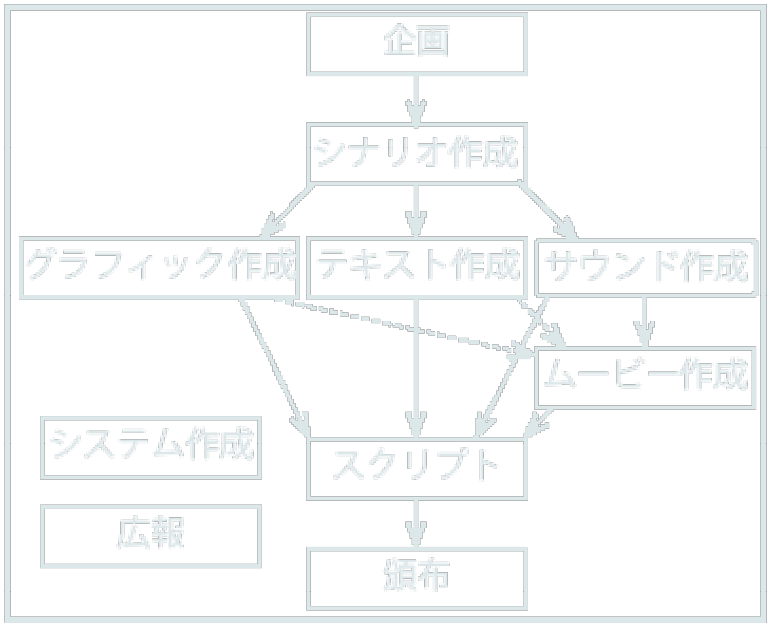
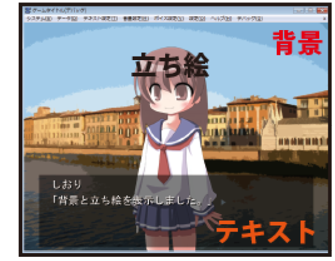
- Preparing the Development Environment
In this chapter, we will download necessary files like the Kirikiri/KAGEX SDK and set up an environment where game production is possible.
- Displaying file extensions
If your environment doesn't display file extensions, the following explanations will be difficult to understand, so we'll display them beforehand. Those in an environment where they are already displayed can skip this. I'll provide a basic explanation, but for those who have never heard the word "extension," the explanations in this book might be difficult. If you find yourself unable to understand, please search the internet and do your best.
In Windows, the file format (type) is identified by an "extension." Extensions are attached to the end of a file name, separated by a "." (period). For example, if the file name is "memo.txt", "txt" is the extension. "txt" is the extension for a "text file" that can be opened with Notepad or similar. There are many other extensions such as "exe", "zip", and "jpg".
Extensions are important in game development, but Windows has an unfortunate default setting where the display of extensions is omitted. We will change this setting so they are not omitted. I'll explain how to change it in Windows 7. For XP or Vista, search for something like "windows xp show extensions," and many easy-to-understand web pages with images will come up.
First, click "Control Panel" from the Start menu at the bottom left. Once the Control Panel opens, click "Appearance and Personalization" → "Folder Options." Next, select the "View" tab, find "Hide extensions for known file types" in the "Advanced settings," and uncheck it. Click the "OK" button to change the setting so extensions are not omitted.
- Obtaining the Kirikiri/KAGEX SDK
To develop games with Kirikiri/KAGEX, you need various files like KAGEX and other plugins in addition to the Kirikiri engine. Since it's tedious to download them one by one, I have made them available for download as an SDK (Software Development Kit) on the support page of this book. Access "http://biscrat.com/book/kagex/support/" and download it.
The SDK you obtained is compressed in ZIP format. Please decompress it yourself. If you don't know how, refer to "Compression/Decompression" in the next section. When decompressed, a folder like "KAGEX_SDK" will be created. There is a "readme.txt" inside, so click and read it.
The "Kirikiri Stable SDK" folder within the "KAGEX_SDK" folder also contains "readme.txt" and "license.txt". Please read these carefully as well. They are the licenses (terms of use) for using Kirikiri. You will be allowed to use Kirikiri, which was produced by W.Dee. Of course, you cannot use it however you want, so you must follow the conditions written there. The following explanation is not formal at all and is just a very rough explanation to help understanding. Be sure to read and understand "license.txt" yourself.
Kirikiri can be used by choosing either the "GNU GPL" or "Kirikiri Original License." For making games, the "Kirikiri Original License" is more important. I have never seen an example of using Kirikiri under GPL. Under the "Kirikiri Original License," you can use Kirikiri for free. This remains the same whether you distribute the game for free or for a fee. There is no obligation to display "using Kirikiri" or similar when distributing it as a game. It's very generous. If you use C++ to modify the Kirikiri engine, there are other conditions, but this book doesn't deal with that.
The "Kirikiri Stable SDK" folder contains "kag3" and "kirikiri2" folders in addition to the license.
The "kag3" folder contains the KAG system and its manual. Since we are using KAGEX instead of KAG, we won't use the kag3 folder. You can try reading the manual, but keep in mind that it is completely different from KAGEX. Reading it poorly will cause confusion.
The "kirikiri2" folder contains the Kirikiri engine and its manual. "krkr.exe" is the Kirikiri engine itself. If you click it, a "Select Folder/Archive" window appears. Since preparation isn't finished yet, just click "Cancel" and exit. The "kr2doc" folder contains the manual (reference) for the Kirikiri engine, and the "tjs2doc" folder contains the manual for TJS used in Kirikiri. It's difficult to read them suddenly, but as you get used to it, you might start using them. Just keep the existence of the manuals in the back of your mind. The "tools" folder contains tools used in game production. This book also uses some of those tools.
- Compression/Decompression
"Compression" is reducing the size of a file. If the size is large, it takes time to send and receive over the internet, so most files distributed on the internet are compressed. Besides ZIP, there are various compression formats like LZH, RAR, CAB, and 7Z. ZIP is the most popular compression format.
Compressed files cannot be used directly. Restoring a compressed file to its state before compression is called "decompression" (or unzipping). To use Kirikiri, you need to decompress ZIP files, and for that, you need a dedicated application. Here, I'll introduce how to use the famous "+Lhaca".
+Lhaca can be downloaded from "http://park8.wakwak.com/~app/Lhaca/". Execute the downloaded file to install it. Once installation is complete, an icon for +Lhaca should be on your desktop. If you drag and drop the downloaded "kagex_sdk.zip" onto that icon, it will be automatically decompressed and a folder named "kagex_sdk" will appear on your desktop. That is the decompressed Kirikiri folder. Once decompressed, the "kagex_sdk.zip" is unnecessary and can be deleted.
- Obtaining asset files
Scripts aren't mastered just by reading a book. To allow you to try things while reading, I've made dummy assets like images and sounds used in the sample scripts of this book available for download. Like the SDK, please download and decompress them from the support page.
- Preparing the development folder
The SDK has all the necessary files, but they are scattered across different folders and hard to use, so we will create a development folder and arrange the files.
First, create a new folder for development. The name can be anything, but for example, create one named "Development Folder" on the desktop. It doesn't have to be on the desktop; anywhere you find easy to use is fine. Once created, double-click "make_dev_folder.bat" located in the "Tools" folder of the SDK folder. A "Select Development Folder" dialog will open, so select the "Development Folder" you just created and press the "OK" button. This will copy all files used to the "Development Folder."
Try launching "krkr.exe" copied to the "Development Folder." It's OK if the game screen displays successfully.
- Preparing .Net Framework 4
To use some development tools, you need to have "Microsoft .Net Framework 4" installed. Please download and install it from the Microsoft page. It can be downloaded from "http://www.microsoft.com/downloads/ja-jp/details.aspx?displaylang=ja&FamilyID=9cfb2d51-5ff4-4491-b0e5-b386f32c0992".
- Preparing a text editor
To write scripts, you need software called a "text editor." If you have one you are used to, please use it. Note that "word processors" like "Microsoft Word" or "Ichitaro" are not suitable. Word processors have functions to insert images or change font sizes, but scripts only use simple text. Therefore, we use a text editor specialized in handling only characters.
I'd like to simplify things by saying "standard Windows Notepad is fine," but I'd be sad if people actually used Notepad, so I'll explain. The efficiency between Notepad and other high-performance text editors is on a different level. I use text editors like "Sakura Editor" or "Emacs." Here, I'll introduce how to set up Sakura Editor. For detailed usage, refer to the Sakura Editor help.
First, download the necessary files. Click "Download" from the Sakura Editor webpage "http://sourceforge.net/projects/sakura-editor/" to start the download. It will be a ZIP format file like "sakura-2-0-3-1.zip", so please decompress it. When decompressed, "QuickStartV2.zip" and "sakura.exe" will be inside. "QuickStartV2.zip" is unnecessary and can be deleted. For "sakura.exe", create a new folder like "Sakura Editor" and put it inside.
Next, download the Unicode-compatible file like "bron205.zip" from the "bregonig.dll" webpage "http://homepage3.nifty.com/k-takata/mysoft/bregonig.html". The number part might have changed. This is also in ZIP format, so decompress it. There will be a file named "bregonig.dll," so move it to the same folder as "sakura.exe." Other files are unnecessary and can be deleted.
Finally, download the Kirikiri configuration file for Sakura Editor from the support page of this book "http://biscrat.com/kagex/support/". It is in ZIP format, so decompress it and move the resulting "krkr_sakura" folder to the same location as "sakura.exe".
Once you've done this, click "sakura.exe" to run it. Configure it for Kirikiri. In the menu, go to "Settings" → "Type Settings List" → select an unused setting (like "Setting 20") → "Import" → select "tjs.ini" in the "krkr_sample" folder and click "Open" → "Yes" → "OK" → "OK." This completes the setup for TJS script editing. Similarly, import "ks.ini" in the "krkr_sample" folder to around Setting 21.
Finally, set up the computer so that KAGEX script files (files with the extension ks) and TJS script files (files with the extension tjs) automatically open in Sakura Editor. Specifying software to use for each extension like this is called "file association." if the text-only instructions aren't clear enough, search and you'll find easy-to-understand explanations.
In the "data" folder within the "Development Folder," there is a file called "startup.tjs." Double-click it, and a dialog like "Windows cannot open this file" will appear. Check "Select a program from a list of installed programs" and click the "OK" button. When the "Open With" dialog appears, select "sakura.exe" via the "Browse" button and click the "Open" button. Ensure "Always use the selected program to open this kind of file" is checked and click the "OK" button. "startup.tjs" will now be editable in Sakura Editor. Exit Sakura Editor once and confirm that double-clicking "startup.tjs" runs Sakura Editor. Similarly, associate "01.ks" in the "scenario" folder with Sakura Editor. The method is exactly the same. With this, files with extensions tjs and ks can be edited in Sakura Editor.
This is optional, but if you click "Show Tab Bar" from the "Settings" menu, you'll be able to use tabs when editing multiple files. It's convenient, so I recommend setting it. There are various other setting items. I recommend checking the Sakura Editor help and configuring it to your liking to increase efficiency.
- Script Basics
From this chapter, we will finally start writing KAGEX script. We will try basic functions like displaying text and images, and playing sounds.
- Folder structure
During game development, you will be modifying the contents of the "data" folder in the "Development Folder." This data folder is also called the "Project Folder." All assets and script files used in the game must be placed in this project folder.
There are many folders inside that project folder as well. I'll explain them a bit here.
|
List of Folders for Asset Files |
|
|---|---|
|
bgimage |
Place background images here. |
|
fgimage |
Place character sprite images here. |
|
evimage |
Place event CG images here. |
|
uiimage |
Place interface images like buttons here. |
|
rule |
Place rule images for transitions here. |
|
thum |
Place images for thumbnails here. |
|
image |
Place other images here. |
|
bgm |
Place sound files for BGM here. |
|
sound |
Place sound files for sound effects here. |
|
voice |
Place sound files for voices here. |
|
video |
Place movie files here. |
|
other |
Place other files here. |
|
List of Folders for Script Files |
|
|---|---|
|
system |
Contains the TJS scripts for the KAGEX system. |
|
biscrat |
Contains TJS scripts written by the author to extend KAGEX. |
|
main |
Place other TJS scripts here. |
|
init |
Contains files for changing KAGEX settings. |
|
sysscn |
Contains KAGEX scripts related to the system. |
|
scenario |
Contains the KAGEX scripts for the game proper. |
The list of folders for asset files is as written. It's clearer to categorize them rather than putting everything in one folder. Since production tools also distinguish by folder, make sure not to put assets in the wrong folder.
As for script folders, this book won't touch upon system, biscrat, or main folders. As a next step, if you become able to use the contents of these folders, you'll be able to do various things. Try it if you're interested. The focus of this book is on the contents of the init, sysscn, and scenario folders.
The "startup.tjs" file directly under the "data" folder is the script executed first when Kirikiri is run. You won't be editing it, so don't worry. Other files like "default.rpf" are configuration files for various tools. They are not used directly.
- Displaying text
After a long introduction, I'll finally start explaining KAGEX script. First, let's display text. The script for the game proper starts from "01.ks" in the "scenario" folder. Open "01.ks" in a text editor. Initially, the following script is written.
|
*start|Start Hello. |
The first line *start|Start is called a label. I'll explain labels later, so ignore them for now. The next line says Hello.. With just this, you can display "Hello." in the game. Try launching "krkr.exe," and "Hello." will be displayed.
|
*start|Start Hello. Breaking the line here will also break the line in the game. Inserting an empty line will cause a line break in the game too. |
Text can be displayed in-game just by typing it. Enter the script above into 01.ks, save it, and launch krkr.exe. Line breaks are also reflected in the game. Also, if you insert an empty line with nothing written, you can wait for a click and advance the page (clear the displayed text).
|
*start|Start This is narration. 【Shiori】"Hello. This is a character's dialogue.」 【Shiori】 「Dialogue can also be written on the next line. Line breaks within dialogue are automatically indented based on the quotation marks. |
Surrounding a character's name with 【】 displays the name of the character who spoke. The character's name is displayed in a dedicated name box, different from where normal text is displayed. When following "【Shiori】" with a line break and writing the dialogue on the next line, be careful not to include spaces after the "】".
|
*start|Start 【Shiori/???】"The name box displays '???'." |
If you want to display text in the name box that is different from the character's actual name, such as when the name is still unknown in the story, insert a "/" (half-width slash). If you simply use "【？？？】", the text display will be fine, but you'll have trouble when playing voices. I'll explain this in detail in the section on voice playback in Chapter 5.
|
*start|Start 【Shiori/???】"You can add [Furigana''furigana] to [Kanji'kanji].」 |
You can also add rubies (furigana). Enclose the part you want to add ruby to with [], and write the characters for the ruby after the ' (half-width apostrophe).
That's the basics of text. Fine details like changing text color or size will be introduced in later chapters.
- About running Kirikiri
You can run Kirikiri by double-clicking "krkr.exe" in the "Development Folder." You can also run it by double-clicking "exec_release.bat" or "exec_debug.bat." exec_release.bat runs Kirikiri with debug mode off. Since it's more convenient to run it in debug mode during development, this is rarely used. exec_debug.bat runs it with debug mode on. Use this during development.
Also, because clicking exec_debug.bat every time you check script behavior is tedious, it's convenient to register it as a shortcut in your text editor. Most editors should have a function to register external programs as shortcuts.
Below is the method for Sakura Editor. Refer to the Sakura Editor help for details. It's a bit of a hassle, but it's a small price to pay considering you'll be launching Kirikiri dozens of times from now on. Please do this even if you are using another editor.
When you launch Sakura Editor, click "Start Recording Macro" in the "Tools" menu. Next, click "Execute External Command" also in the "Tools" menu, select "exec_debug.bat" via the "..." button, and click the "Execute" button. Kirikiri will start, but since we don't need it now, close it. Return to Sakura Editor and click "End Macro Recording & Save" in the "Tools" menu to save it as a macro. Create a new folder named "macro" in the same folder as Sakura Editor and save it as "krkr.mac".
Once the macro is saved, make it executable via a shortcut key. Click "Common Settings" in the "Settings" menu. Open the "Macro" tab and select the "macro" folder you just created via the "Browse" button. Select "krkr.mac" in the "File" field, set the name field to "Launch Kirikiri", the Id field to "0", and click the "Set" button. Next, open the "Key Assignments" tab, select "External Macro" from the "Category", and "Launch Kirikiri" will appear in the "Function" field; select it. Finally, select the key to register as a shortcut; here, we'll set it so Kirikiri can be launched with (Ctrl+Q). Check the "Ctrl" checkbox and select Ctrl+Q from the "Key" field. Press the "Assign" button in this state to complete the shortcut registration. Click the "OK" button to close the Common Settings dialog. Once registered, try pressing Ctrl+Q to confirm that Kirikiri executes.
- About Debug Mode
Running Kirikiri in debug mode provides useful features for development. When debug mode is on, a window called "KAGEX Log" appears below the game window and notifies you if there is an error in the script. It might be in the way, but I recommend keeping it displayed during development. If you close this window, you can display it by clicking "KAGEX Log Mode" in the "Debug" menu of Kirikiri. There are several other items in the "Debug" menu, and some functions will be introduced later.
- About Shortcut Keys
Mouse operation is easy, but getting used to keyboard operations significantly increases work speed. Shortcuts like Ctrl+S (holding the Ctrl key while pressing the S key) to save a file, and Ctrl+Z to undo the previous action, are very common. Knowing Ctrl+T for half-width alphanumeric, Ctrl+U for Hiragana, Ctrl+I for full-width Katakana, Ctrl+O for half-width Katakana, and Ctrl+P for full-width alphanumeric conversion is subtly convenient. Ctrl+M acts as Enter. I can't introduce them all, but there are many others. Even if there are no default shortcut keys, it's good to register functions you use often yourself. You might even register shortcuts for cursor movement. When facing the keyboard for hours a day, even stretching your finger to the right side of the keyboard is tedious. Cursor keys are a waste of time. Whether you go that far is another matter, but game production takes more time than you ever have, so you should make an effort to make things even a little easier. Well, the time saved will just be poured back into game production anyway...
- Displaying images
Next, we will display images. If you haven't downloaded the dummy assets yet, please download them from the support page (http://biscrat.com/kagex/support/).
Images displayed in KAGEX are divided into background, character sprite, event CG, and others. (This does not include system images like text frames, buttons, and sliders. Those will be handled in Chapter 6.) Since each usage is different, I'll explain them one by one. Before that, I'll explain the basic part of image display in KAGEX.
- Omission of vowel marks (Chōonpu)
In computer-related terms, the vowel extension mark (the dash) at the end of words is often omitted. It's "Reiya" instead of "Reiyā" (layer), and "Suraida" instead of "Suraidā" (slider). It doesn't have a major meaning. It might be hard to read, but that's how it is, so please get used to it. "Player" is an exception. "Pureiya" felt a bit weird, so the vowel is extended. This might be because I see it from a humanities perspective, looking at the relationship between the game and the player. Player? Purēyā? After agonizing over it, I unified it to "pureiyā" (player). "Pureiya" looks like it means an mp3 player. This was truly useless chatter.
- About layers
Images are displayed by being pasted onto a transparent board called a "layer." It's similar to layers in image editing software like Photoshop. I'll skip the fine details, but the important part is that layers have a front-to-back relationship. Images displayed on a rear layer are hidden behind images displayed on a front layer. Layers are arranged from the back in the order: "Background < Character Sprites and Others < Event CGs." The background is at the very back, and the event CG is at the very front. Since multiple character sprites are displayed at once, there is also a front-to-back relationship between character sprites. I'll explain this in detail later. On top of all these layers, the text frame and text are displayed.
- About image formats
There are various image formats, but Kirikiri can handle BMP, JPEG, PNG, ERI, TLG5, TLG6, WMF, and EMF.
There are broadly two types of image formats: vector images and bitmap images. Among the formats usable in Kirikiri, WMF and EMF are vector images, but you'll rarely use them when making digital novels. Since the author has hardly used them and cannot explain them, they will be omitted. The remaining BMP, JPEG, PNG, TLG5, and TLG6 are bitmap images.
BMP format is basically not used because the file size becomes too large. I don't know much about the ERI format. I've never used it, so I'll ignore it.
JPEG and PNG formats are used quite a bit. The difference between the two is that JPEG is lossy compression and PNG is lossless compression. With lossy compression, the image becomes blurred or noisy, looking dirty. In return, you can compress the file size to be smaller. With lossless compression, the image remains as beautiful as the original, but the file size is larger compared to lossy compression. These days, hard drive capacity is large, and file size is basically not an issue, so we use PNG format, which is lossless. JPEG might be used if there are special circumstances requiring a smaller capacity. PNG also has the characteristic that indexed colors can be used. When using something called "area images" in Kirikiri, they must be in indexed color. Since this book doesn't use area images, the explanation is omitted.
TLG5 and TLG6 are Kirikiri's original image formats, and in most cases, we use these. Since both are lossless compression, images remain beautiful. TLG5 becomes larger in size than PNG, but image display is slightly faster. TLG6 becomes smaller in size than PNG, and although slower than TLG5, image display is also faster than PNG. Which one to use may be on a case-by-case basis, but I usually use TLG6.
Since TLG5 and TLG6 are Kirikiri-specific formats, they cannot be used in general image editing software like Photoshop or SAI. You first save them in PNG format and then convert them using the tools included with Kirikiri.
- Displaying backgrounds
First, let's display a background image. For sample backgrounds, use images like "bgTown_Day.png" in the "bgimage" folder of the sample assets. Copy all images in the folder to the "bgimage" folder within the development folder.
Background image filenames must follow the format "bg[LocationName]_[TimeName]". In the samples, location names are "Town", "Sunflowers", "LivingRoom", and time names are "Day", "Evening", "Night", "Common".
To display a background, you must define the "LocationName" and "TimeName" beforehand before writing the script. Definitions normally require writing TJS scripts, but a tool has been created to make it easier. Run "autosetting.bat" in the "tools" folder of the "Development Folder." A "Select Project Folder" dialog will appear; select the "data" folder in the "Development Folder" and click "OK." It will look at the images in the "bgimage" folder and define the necessary locations and times.
Once defined, write a script and actually try to display them.
|
*start|Start @stage stage=Town stime=Day Changed location to Town and time to Day. @stage stage=Town stime=Night Changed location to Town and time to Night. @stage stime=Evening Changes the time to Evening. @stage stage=Sunflowers Changed location to Sunflowers. |
Lines starting with @ (half-width at-mark) are command lines. Command lines are also called tags. You must use tags to display images, play sounds, or do anything else.
A tag consists of a leading "tag name" followed by "attributes." In @stage stage=Town stime=Day, "stage" is the tag name, and "stage=Town" and "stime=Day" are attributes. The tag name and each attribute are separated by half-width spaces. Furthermore, attributes are divided into attribute names and attribute values. The part before the = (half-width equal sign) is the attribute name, and the part after it is the attribute value.
To display a background, use the tag named "stage." Specify the location in the "stage" attribute and the time in the "stime" attribute. Doing so changes the game state to the specified location and time, and the background image also changes accordingly. In the tag @stage stage=Town stime=Day, the location is changed to Town and the time to Day, so "bgTown_Day.png" is displayed in the background.
Also, unnecessary attributes can be omitted. In @stage stime=Evening, the stage attribute is omitted, so the location remains Town and only the time changes to Evening. In @stage stage=Sunflowers, the time remains Evening and only the location changes to Sunflowers.
|
*start|Start @stage stage=White stime=Day Changed location to White and time to Day. @stage stime=Evening Changes the time to Evening. Background remains White_Common. |
The time for "White_Common.png" and "Black_Common.png" is "Common". As the name suggests, "Common" means the same image is displayed regardless of the time. In the script above, "White_Common" is displayed regardless of the time.
- Image positioning
Background images are displayed centered on the screen. Let's try it with the sample "bgLivingRoom_Day.png", which is larger than the screen size.
|
*start|Start @stage stage=LivingRoom stime=Day Displays the LivingRoom Day background. The center of the image displays. @stage xpos=100 ypos=-100 Changed image position. The top-left part displays. |
The default window size is 800 pixels wide × 600 pixels high, and the size of the LivingRoom image is 1000 pixels wide × 800 pixels high. To be precise, the background image is displayed such that the center of the image aligns with the center of the window. So, with the first @stage stage=LivingRoom stime=Day, the area inside the "window frame" of the image below is displayed.
The position of the image can be changed using the "xpos" and "ypos" attributes. xpos is the horizontal direction, and you can shift the image to the right by the specified value. You can also shift it to the left by specifying a negative value. ypos is the vertical direction, and you can shift it upwards by the specified value. You can shift it downwards by specifying a negative value. In @stage xpos=100 ypos=-100, the top-left part of the image is displayed by shifting it 100px to the right and 100px down.
- Pixels (pixel)
Specifying image positions in Kirikiri/KAGEX is basically done in pixels (px). A pixel is the smallest unit when displaying color on a monitor. For example, a screen resolution of 1920×1080 means displaying 1920px horizontally and 1080px vertically. Not just for monitors, the size of digital images is in pixels. The millions of pixels mentioned for digital cameras also refer to pixels. If you can take a picture of size 1000px × 1000px, it's 1,000,000 pixels.
Since a pixel is a logical unit, how many centimeters it is physically is not fixed. Even for the same 100px×100px image, the size displayed varies depending on the monitor. The number of pixels and the actual physical size are converted using a unit called dpi (dots per inch). Dot and pixel are basically the same thing. It is a unit often used when printing or scanning. Scanning a 10 inch × 10 inch picture at 300dpi (300 dots per inch) results in a digital image of 3000px × 3000px.
The resolution of Kirikiri/KAGEX (the number of pixels in the Kirikiri window) is 800×600, as mentioned earlier. Pulling the window frame changes the window size and the actual number of pixels in the window also changes, but while using KAGEX script, it automatically handles things, so you don't need to be aware of it. You can just think of it in a non-scaled state. When customizing with TJS, you need to be a little more careful.
Commercial games are also increasing screen sizes. Some extreme ones are 1900×1200... in doujin, 800×600 seems to still be the mainstream. The good thing about larger screen sizes is that the pictures are beautiful even when playing in full screen. If you full-screen 800×600, the picture might look dirty depending on the monitor. On the production side, it becomes hard because images need to be made larger. If you use free materials from the web, the size is often 800×600, which might also be a bottleneck.
Another topic is aspect ratio. Aspect ratio is the ratio of width to height of the resolution. 800×600 is a 4:3 aspect ratio; for popular wide support, 1280×720 is a 16:9 aspect ratio, and so on. In widescreen, the screen is wide, making text hard to read, and pictures look strange if you make them with the previous sensation. There's also a joke about CGs becoming too slanted due to wide-screening. (Reference: 2ch "Eroge should be 4:3. Wide-screening is a mistake" thread http://pele.bbspink.com/test/read.cgi/erog/1299685511/). In the reference URL, it's linked to discussions about first-person perspective, but as someone observing in a third-person cinematic way, a tilted camera is strange. I won't say wide-screening is a mistake, but I think there are better ways to do it. One is to move the text display from the bottom to the side and use the screen vertically. While assembling scripts, I often think it's a waste that the character sprite's absolute territory is hidden by the text box. If you're going to wide-screen, why not just make it a vertical screen? A girl displayed on a vertical screen is 30% cuter just because of that. The iPad device screen itself is vertical, so I have expectations there. Even on a PC, if you have 1000 vertically, you should be able to make a game with a vertical screen. Someone should do it. My apologies to laptop users.
Unrelated, but there are quite a few people who think Protagonist = Myself. I never had that idea myself. It's closer to the sensation of just watching the protagonist and a girl flirting. When applying direction, the awareness of a protagonist's perspective is thin, and I feel like I'm moving them from a third-person perspective. I often wish the protagonist had a sprite too.
Digression over. Returning to script explanation.
- Displaying character sprites (Tachie)
Next, we'll display character sprites after the background. Use images like "fgShiori_PoseA_Casual_Smile_0.png" in the "fgimage" folder of the sample assets. Copy all to the "fgimage" folder in the development folder.
Character sprite filenames follow the format "fg[CharacterName]_[PoseName]_[OutfitName]_[ExpressionName]_[DisplayLevel]". In the samples, character names are "Shiori" and "Kaede", pose names are "PoseA" and "PoseB"... and so on. When using English letters in filenames, always use lowercase. It needs to be "posea" rather than "PoseA".
For character sprites, you must define "CharacterName", "PoseName", "OutfitName", "ExpressionName", and "DisplayLevel" respectively. These can also be defined automatically with autosetting.bat. Run autosetting.bat after copying the character sprite images.
The sample images being used now can display a character sprite with a single image. This is called "Expression-Combined Type Character Sprite." In this case, the classification of pose name, outfit name, and expression name isn't very important. Even when using your own character sprite images, there's nothing special to be careful about; just change the pose name part if the pose is different, the outfit name part if the outfit is different, and the expression name part if the expression is different. The character name part is self-explanatory. The display level will probably be categorized by character sprite size. The display level must be a half-width number of 0 or higher, and the larger the number, the further forward the character sprite is displayed among character sprites. We'll look at the actual script next.
Character sprites can also be in a format where they are displayed by combining two images: "base image + expression image." This is called "Expression-Separated Type Character Sprite." Doing this can make image capacity smaller or asset management easier. How to make images for this case will be described later. Once images are made and defined, the usage in script is exactly the same for both combined and separated types.
|
*start|Start @stage stage=Town stime=Day Display the background. @char name=Shiori pose=PoseA dress=SchoolUniform face=Smile level=0 【Shiori】"Displays the character sprite." @char name=Shiori pos=Hide Clears the character sprite. @char name=Shiori face=Surprised Change the expression and display again. |
To display a character sprite, use the "char" tag. Specify the character name in the "name" attribute, pose name in "pose", outfit name in "dress", expression name in "face", and display level in "level". There are many attributes, but it's enough to specify them all once at the beginning, and thereafter only specify attributes you want to change. The "name" attribute cannot be omitted because it determines which character sprite to operate on.
The display state of a character sprite can be changed with the "pos" attribute. Setting "pos=Hide" makes the character sprite hidden. When displaying, changing expressions or poses will automatically display it.
I haven't explained how to show or hide the background, but for the background, we don't hide the background itself, but rather display a solid black image like "Black_Common.png".
- Character sprite X-offset definition
Running the previous script shows the character sprite displayed in a strange position, like in the bottom-left image. Actually, character sprites are displayed such that the bottom-center of the character sprite image aligns with the center of the screen. Why it ends up at this position will be explained in detail in Chapter 4. For now, in this case, it looks just right if you shift it down by 300px like in the bottom-right image.
To shift it, you can use xpos and ypos attributes just like with the background, but you can also configure it to shift the positions of all character sprites collectively. It's more convenient to use that function to fix initial character sprite misalignment.
Open "envinit.otjs" in the "init" folder of the project folder in a text editor. This is a file that configures the behavior of autosetting.bat, which we've used several times. Once opened, look for the part written as follows:
|
// ■yoffset // Specifies the Y-direction offset (shift amount) for character sprites for each display level. yoffset[0] = 0; yoffset[1] = 0; yoffset[2] = 0; |
Offsets can be set for each display level. They are set in the format yoffset[DisplayLevel] = Offset;. By default, the offset for display levels 0, 1, and 2 is 0 (no shift at all). Since we are using display levels 0 and 1 in the samples, we just need to set those offsets to 300px downward. In yoffset, contrary to the ypos attribute, specifying a positive value shifts it down, and a negative value shifts it up.
|
// ■yoffset // Specifies the Y-direction offset (shift amount) for character sprites for each display level. yoffset[0] = 300; yoffset[1] = 300; yoffset[2] = 0; |
Changing it like this is OK. Once changed, run autosetting.bat in the tools folder again to apply the changes. Launch the game and confirm that the character sprite positions are shifted.
- Display levels
|
*start|Start @char name=Shiori pose=PoseA dress=SchoolUniform face=Smile level=0 【Shiori】"Displays the character sprite." @char name=Kaede pose=PoseA dress=Casual face=Expressionless level=1 【Kaede】"Displays another character sprite." @char name=Kaede level=0 xpos=80 【Kaede】"Changes the display level and position." @char name=Shiori front 【Shiori】"Moves to the front." @char name=Shiori back 【Shiori】"Moves to the back." |
Character sprites are displayed further forward as the display level increases. Kaede's character sprite is level=1, which is higher than Shiori's level=0, so it is displayed in front of Shiori's. Even after changing Kaede's level to 0 with @char name=Kaede level=0 xpos=80, because the one modified later comes forward, Kaede's character sprite remains displayed in front.
The front-to-back relationship between character sprites with the same display level can be changed with "front" and "back" attributes. Use them with only the attribute name, omitting the value, like @char name=Shiori front. The front attribute changes the order to the very front within the same display level, and the back attribute to the very back.
- Displaying event CGs
Next, we display event CGs. Use "evDiscovery.png" in the "evimage" folder of the sample assets. Event CG filenames follow the format "ev[EventName]".
Event names also need to be defined beforehand with autosetting.bat. After copying sample images to the "evimage" folder of the project folder, run autosetting.bat.
|
*start|Start @stage stage=Town stime=Evening @char name=Shiori pose=PoseA dress=SchoolUniform face=Smile level=0 Display the background and character sprite. @event file=Discovery Displays the event CG. @stage stage=Sunflowers Changes the background. |
To display an event CG, use the "event" tag. Specify the event name in the "file" attribute. Since event CGs are displayed between display level 4 and display level 5 character sprites, when you display an event CG with @event file=Discovery, the background and character sprites are hidden behind it and become invisible. When you change the background or time with a stage tag, like @stage stage=Sunflowers, the event CG is hidden.
The display position of event CGs, like backgrounds, is centered such that the center of the image is at the center of the window. Use xpos and ypos attributes to shift the position.
- Displaying other images
You may want to display images other than backgrounds, character sprites, and event CGs. Let's try displaying "Star.png" in the "image" folder of the sample assets. Copy it to the "image" folder of the project folder.
There are no rules for the filenames of other images, so any filename you find easy to understand is fine. There is no need to define them in advance with autosetting.bat or similar.
|
*start|Start @layer name=StarLayer file=Star show Display the star. @layer name=StarLayer hide Hides the star. @layer name=StarLayer show Displays again. |
Other images are displayed on "environment layers." Environment layers can be displayed using the "layer" tag. Specify the name of the environment layer in the "name" attribute and the image filename in the "file" attribute to load the image file into the environment layer with the specified name. Names can be anything, so give them a suitable name. If the name is different, it becomes a separate environment layer, so you can display multiple copies of the same image. Environment layers can be shown with the "show" attribute and hidden with the "hide" attribute, omitting the values.
|
*start|Start @layer name=Star1 file=Star show Display the star. @layer name=Star2 file=Star show xpos=20 level=1 Displays another star. @layer name=Star1 level=2 Moved Star1 to the front. |
Environment layers also have display levels, just like character sprites. It is exactly the same, except using the "layer" tag instead of the "char" tag. "front" and "back" attributes can also be used in the same way.
Like backgrounds and event CGs, environment layers are displayed at the center such that the center of the image is at the center of the window. They are the same in that the position can be shifted with "xpos" and "ypos" attributes.
Actually, loading a file with the "file" attribute automatically displays it, so the "show" attribute in the first @layer name=Star1 file=Star show is unnecessary. I include "show" to make it clearer, but you can omit it. Conversely, if you want to load with "file" but not display it, you must include the "hide" attribute.
- Comments
*start|Start
; This is a comment sample
; Lines starting with ; are ignored
@stage stage=Town stime=Day
Display the background.
You may want to write notes in the script, such as instructions for direction or acting. Adding ";" (half-width semicolon) to the beginning makes that line a "comment," which does not affect the game's behavior. Lines with a semicolon are simply ignored, so you can write anything.
As a side note, in TJS scripts, lines with "//" (two half-width slashes) become comments. In envinit.otjs, there were lines like // Specifies the Y-direction offset (shift amount) for character sprites for each display level., but they were notes written as comments.
- Shorthand notation
I've introduced how to display backgrounds, character sprites, event CGs, and others used in the game. These are used very frequently, but because tag names and attributes are long and tedious, they can be used with shorthand.
|
*start|Start ; Same as @stage stage=Town stime=Day @Town Day Display the background. ; Same as @stage stage=Sunflowers @Sunflowers Changes the location. ; Same as @stage stime=Evening @Evening Changes the time. |
For backgrounds, you can omit the tag name "stage" and the attribute names "stage" and "stime," and use the location name or time name as the tag name. Since other attribute names like xpos cannot be omitted, it would be @stage xpos=20 or @Town xpos=20.
|
*start|Start ; Same as @char name=Shiori pose=PoseA dress=SchoolUniform face=Smile level=0 @Shiori PoseA SchoolUniform Smile Back 【Shiori】"Displays the character sprite." ; Same as @char name=Shiori pose=PoseA dress=Casual face=Expressionless level=1 @Kaede PoseA Casual Expressionless Front 【Kaede】"Displays another character sprite." ; Same as @char name=Kaede face=Smile @Kaede Smile 【Kaede】"Changes the expression." ; Same as @char name=Kaede pos=Hide @Kaede Hide Clears the character sprite. |
For character sprites, the tag name "char" and the attribute names "name", "pose", "dress", "face", "level", and "pos" can all be omitted. The character name specified in the "name" attribute can be used as the tag name.
To omit the "level" attribute specifying the display level, you must define names for the display levels. Open envinit.otjs in the init folder and look for the following part:
|
// ■levels // Names the character sprite display levels for each display level. levels[0] = "Back"; levels[1] = "Front"; levels[2] = "VeryFront"; |
Define in the format levels[DisplayLevel] = "DisplayLevelName";. Surround the display level name with "" (half-width double quotes). By default, "Back" can be used as shorthand for level=0, "Front" for level=1, and "VeryFront" for level=2. Rewrite as necessary and run autosetting.bat, and the defined names will be usable in scripts. The sample in this book will use them as they are without modification.
For character sprites, you can also define names for the "xpos" attribute and omit it. Refer to "envinit.otjs" for this as well.
|
// ■xpos // Names positions in the X-direction. xpos.FarLeft = -400; xpos.BackLeft = -300; xpos.Left = -200; xpos.MidLeft = -100; xpos.Center = 0; xpos.MidRight = 100; xpos.Right = 200; xpos.BackRight = 300; xpos.FarRight = 400; |
Define in the format xpos.Name = xposValue;. By default, "FarLeft" is shorthand for xpos=-400, "BackLeft" for xpos=-300, "Left" for xpos=-200... and so on. Rewrite if necessary and run "autosetting.bat." The samples in this book use them as they are.
|
*start|Start @Shiori PoseA SchoolUniform Smile Back Left 【Shiori】"Displays the character sprite." @Kaede PoseA Casual Expressionless Back Right 【Kaede】"Displays another character sprite." @Shiori Hide @Kaede Hide Clears the character sprites. |
Actual usage is as above. Just specify them side by side, same as outfits or expressions.
|
*start|Start ; Same as @event file=Discovery @Discovery Displays the event CG. |
For event CGs, the tag name "event" and the "file" attribute can be omitted. The event name becomes the tag name. When changing the position, it would be @Discovery xpos=30. To make it clearer that it is an event CG, you can also add "ev" to the tag name, like @evDiscovery. Use whichever you find easier.
|
*start|Start @layer name=StarLayer file=Star show Display the star. ; Same as @layer name=StarLayer hide @StarLayer hide Hides the star. ; Same as @layer name=StarLayer show @StarLayer show Displays again. |
For environment layers, the tag name "layer" and the "name" attribute can be omitted. The environment layer name specified in "name" becomes the tag name.
However, you cannot omit them for a first-time environment layer name. Since the environment layer with the specified name is created only upon first use, it can be omitted only when it has already been created.
|
; An environment layer named "StarLayer" is created here. ; Omission like @StarLayer file=Star show is not possible for the first time. @layer name=StarLayer file=Star show Display the star. ; Same as @layer name=StarLayer xpos=100 @StarLayer xpos=100 Change the star's position. ; Same as @layer name=StarLayer delete @StarLayer delete Delete the environment layer. ; The next time you use it, you must create the environment layer again using "@layer" without omission. @layer name=StarLayer file=Star show Display the star. |
Instead of hiding it with the "hide" attribute, you can also delete the created environment layer by using the "delete" attribute, like @StarLayer delete. The attribute value is omitted. If you are concerned about unused environment layers remaining, you might want to delete them. If deleted, you must create the environment layer again using "@layer" without omission the next time you use it.
- Playing BGM
Since we've covered images roughly, let's try playing BGM.
Copy "bgmLakesideVillage.ogg" and "bgmWinterBreath.ogg" from the sample "bgm" folder into the "bgm" folder of the project folder. BGM files follow the naming convention "bgm[bgmName]". For BGM, there is no need to run autosetting.bat or similar.
|
*start|Start @bgm play=bgmLakesideVillage Play BGM. @bgm play=bgmWinterBreath loop=false Switches the BGM. It will not loop. @bgm stop Stops the BGM. |
To play BGM, use the "bgm" tag. When you specify the BGM filename in the "play" attribute, that file will play as the BGM. Once the BGM finishes playing to the end, it will automatically loop back to the beginning. Specifying "false" in the "loop" attribute will prevent it from looping. You can stop BGM playback with the "stop" attribute, where the attribute value is omitted.
|
*start|Start ; Same as @bgm play=bgmLakesideVillage @bgmLakesideVillage Play BGM. ; Same as @bgm play=bgmWinterBreath loop=false @bgmWinterBreath loop=false Switches the BGM. It will not loop. @bgm stop Stops the BGM. |
For BGM, you can omit the tag name "bgm" and the "play" attribute when playing. If you use the BGM filename as the tag name, like @bgmLakesideVillage, that BGM will play.
- About music file formats
The music file formats that can primarily be played in Kirikiri are PCM WAV (extension is wav) and OggVorbis (extension is ogg).
WAV is the format used in music CDs; since it is basically uncompressed, the sound quality is good, but the file size becomes large. At typical settings, a WAV file is about 10MB per minute. You might use it if file size is not an issue.
OGG uses lossy compression, so the sound quality is lower, but the file size can be made smaller. This is usually used in games. Unlike the commonly used MP3, there are no licensing fees. There are various tools available to convert from other formats like WAV or MP3 to OGG, so use whichever you like.
Since OGG and MP3 are lossy formats, sound quality deteriorates every time you edit the file. Always perform tasks like applying effects or adjusting volume on the original WAV file. After editing is finished, convert it to OGG for use in the game.
Actually, it seems to support 5.1ch surround sound as well. It might be fun if someone tried it.
In addition to WAV and OGG, it is said that MIDI, CD-DA, and the original TCWF format can be used. However, I won't explain them as I don't use them.
- Playing sound effects
Next, let's play sound effects. Copy "seButton.ogg" and "seRain.ogg" from the sample "sound" folder into the "sound" folder of the project folder. Sound effects follow the naming convention "se[seName]". For sound effects, there is no need to run autosetting.bat or similar.
|
*start|Start @se play=seRain loop=true Playing a sound effect on a loop. @se play=seButton Played another sound effect as a one-shot. @se name=seRain stop Stops the sound effect. |
To play sound effects, use the "se" tag. When you specify the sound effect filename in the "play" attribute, that file will play as a sound effect. Unlike BGM, sound effects do not loop by default. Playing a sound just once without looping is also called "one-shot" playback. You can enable looping for sound effects by specifying "true" in the "loop" attribute.
A major difference between BGM and sound effects is that while only one BGM track can play at a time, multiple sound effects can play simultaneously. In the script above, "seButton" is played while "seRain" is looping. The number of sound effects that can be played simultaneously defaults to 3. This can be increased in the settings, but it is rare to need to play 4 or more at once.
To stop playback, use the "stop" attribute, but since multiple sound effects can play at once, you need to specify which one to stop using the "name" attribute, like @se name=seRain stop.
|
*start|Start ; Same as @se play=seRain loop=true @seRain loop=true Playing a sound effect on a loop. ; Same as @se play=seButton @seButton Plays another sound effect. ; Same as @se name=seRain stop @seRain stop Stops the sound effect. |
For sound effects, the "se" tag name and "play" attribute can be omitted. If you use the sound effect filename as the tag name, that file will play as a sound effect. When stopping, you can also omit the "name" attribute and stop it by using the filename as the tag name with the "stop" attribute.
- True and False
The "loop" attribute, common to both BGM and sound effects, is specified as "true" or "false". In Japanese, true = shin (truth), false = gi (falsehood). There are many other attributes that specify true or false. It's helpful to think that specifying true turns that attribute's function on, and false turns it off. In the "loop" attribute, true turns loop playback on, and false turns it off. In the previous script, we only used loop=false for BGM and loop=true for sound effects, but you can also specify loop=true for BGM and loop=false for sound effects. However, as mentioned, since loop playback is on by default for BGM and off for sound effects, there is no real point in specifying them explicitly.
- Omitting the True Attribute Value
Attributes consist of an attribute name and value separated by "=", but if the value is "true", it can be omitted. @seRain loop is the same as @seRain loop=true. Do you remember omitting the attribute values for the "front" and "back" attributes when changing the display order of character sprites? Actually, those were also omissions of front=true and back=true. It carries the meaning of turning on the function to bring it to the front or turning on the function to move it to the back. Being able to specify true means you could also specify front=false or back=false, but in these cases, nothing would happen, so it's a complete waste. Ultimately, you will use them by omitting the attribute values like front or back. The same applies to the "show" and "hide" attributes in the layer tag.
- Script execution order
KAGEX scripts are mostly made up of tags. So far, we've introduced tags like stage, char, event, etc. Text is displayed just by writing it directly, but actually, that is also a tag. The "ch" tag is used to display text. Since text is used extensively, it would be tedious to write tags every time, so it's simplified so you can write it directly. Newlines and page breaks also use their own respective tags.
KAGEX scripts are executed in order from top to bottom. It's obvious but important.
|
*start|Start @stage stage=Town stime=Day Display the background. @char name=Shiori pose=PoseA dress=SchoolUniform face=Smile level=0 Display the character sprite. |
First, @stage stage=Town stime=Day, which displays the background, is executed. Once displayed, the "ch" tag that displays the text Display the background. is executed. Next, since an empty line is inserted, a "tag to wait for the player to click" is automatically executed, and script execution pauses.
It is also helpful to know that script execution is paused here. KAGEX scripts will continue executing from the top unless paused or temporarily stopped by some tag.
When the player clicks, script execution resumes, and a "tag to advance the page" is automatically executed, clearing the text. Afterward, the character sprite is displayed with @char name=Shiori pose=PoseA dress=SchoolUniform face=Smile level=0, and finally, Display the character sprite. is shown with the "ch" tag. Since execution has finished to the end, script execution stops.
There are cases where you cannot simply execute from top to bottom, such as when the scenario branches due to choices. If Choice A or B is selected, the position where the script is executed must change accordingly.
|
*start|Start This is the start. @next target=*label1 *label2 This is label 2. @next target=*start *label1 This is label 1. @next target=*label2 |
First, let's simply change the script execution position without using choices. For that, use the "next" tag. If you specify a label name in the "target" attribute, the script will execute from that label next. A label is a line starting with * (half-width asterisk), such as *start or *label1. Labels serve as landmarks for changing the script execution position, and are not limited to the next tag. If you tried to specify a position by line number, like line 100 of "01.ks", it would be difficult as adding just one tag would shift the target position. By using labels, it remains safe even if line numbers shift.
*start|Start, which we haven't explained until now, is also a label. Ignore the | (half-width vertical bar) at the back for now. I'll explain it shortly. The label name is the "start" part before the |. The mechanism is such that when Kirikiri is launched, KAGEX script execution starts from the *start label in "01.ks" after preparations are finished.
In the script above, after This is the start. is displayed, the script execution position changes to *label1 via @next target=*label1. This is also called "jumping" to label 1. Therefore, This is label 1. is displayed, then it jumps to *label2 in the same way, and This is label 2. is displayed. Finally, @next target=*start returns execution to *start, so "This is the start.", "This is label 1.", "This is label 2."... will continue to be displayed endlessly every time you click.
You can give labels any name you like, such as "start" or "label1", but spaces cannot be used.
|
*start|Start This is the start. @next target=*label1 storage=02.ks |
Using the "storage" attribute allows you to execute scripts in a different file. Write the above script in "01.ks" as before.
Create a new text file in the "scenario" folder of the project folder and change the name, including the extension, to "02.ks". Once changed, write the following script in "02.ks".
|
*label1 Executes the script from 02.ks. @next target=*start storage=01.ks |
When you launch the game, execution starts as usual from *start in "01.ks". After This is the start. is displayed, it jumps to *label1 in "02.ks" via @next target=*label1 storage=02.ks. Then, it returns to *start in "01.ks" via @next target=*start storage=01.ks.
While filenames are like 01.ks or 02.ks (number + .ks), there is no rule saying they must be numbers. You can give them easy-to-understand names like "ShioriRoute.ks" or "Epilogue.ks". You can execute the script of that file by specifying it in the storage attribute like @next storage=ShioriRoute.ks target=*???.
- Specifying save data names
|
*start|Start The save data name is "Start". Try saving from the menu. *label0|0001 The save data name is "0001". *label1 Here too, the save data name is "0001". *|0002 The save data name here is "0002". |
The part after the "|" (half-width vertical bar) in the label becomes the name of the save data. Launch the game and try saving via "Save" under "Data" in the menu. You'll notice that the data name visible in "Load" changes depending on when you save.
Passing *label0|0001 changes the data name when saved to "0001". The next *label1 does not have a save data name. In this case, it remains "0001" without changing. In *|0002, the label name is omitted. In this case, since the label name to be specified in the target attribute is unknown, it cannot be used as a landmark for executing the next tag. Such omissions can be made when you only want to change the save data name.
|
*start|Start The save data name is "Start". This is the next text without a label. This is the text after that. |
As explained with the next tag, a label must be used as a landmark to change the script execution position. This is the same when loading saved data. Therefore, when loading data saved at This is the next text without a label., it's impossible to execute the script directly from there. In KAGEX, the mechanism for loading involves jumping to *start|Start first and then fast-forwarding script execution to the actually saved This is the next text without a label..
While fast-forwarding through 2 or 3 lines ends in an instant, fast-forwarding 1000 or 2000 lines takes time. Because of this, loading data saved very far from the previous label will take time for fast-forwarding and result in a slightly sluggish behavior.
|
*start|Start The save data name is "Start". *| This is the next text without a label. *| This is the text after that. |
To prevent this, place labels sporadically even if they aren't otherwise needed. In my case, I place a label every 300 to 500 lines. Since these labels don't need to be targets for next tags or change save data names, they can be simplified to *| (just a half-width asterisk and vertical bar). Omitting the label name means you can't jump with a next tag, but it's fine as they can be used for jumping during loading.
- Deleting save data
Saved data is stored in the "savedata" folder in the same folder as "krkr.exe". Deleting the contents of this folder deletes the game's save data. Running "clean.bat" in the same folder as "krkr.exe" will delete the contents of the savedata folder.
If something seems wrong during development, try deleting the save data first; it might fix it. If KAGEX script label names change, the data becomes unusable to begin with. Even otherwise, various data is automatically saved when the game ends and loaded the next time the game is launched. If you've changed settings during development, a discrepancy with the data might occur, potentially causing changed settings not to be reflected or behavior to become strange.
You'll see that data is being saved if you pull the window frame to change the window size and then restart the game. The window remains at the changed size even after restarting. If you then run "clean.bat" to delete the data and launch the game again, the window size will return to normal.
In most cases, you don't need to delete the data, but try it if you find things aren't working as expected. If it's fixed, congratulations. If not, there's an issue somewhere else.
- Choices
|
*start|Start Let's try using choices. Please select the one you like. @seladd text="Return to Start" target=*start @seladd text="Choice 1" target=*Choice1 @seladd text="Choice 2" target=*Choice2 @select *Choice1 Selects Choice 1. @next target=*start *Choice2 Selects Choice 2. @next target=*start |
Choices follow a flow of registering choices with the "seladd" tag and then displaying the registered choices with the "select" tag.
In the "seladd" tag, specify the characters to display as the choice in the "text" attribute, and the label name to jump to when that choice is selected in the "target" attribute. Like the next tag, you can use the "storage" attribute to jump to a label in another file.
The "select" tag displays the choices registered with seladd tags up to that point and stops script execution until the player selects a choice. Once selected, script execution resumes from the label specified by that choice.
- Attribute values containing spaces
Suppose you want to display a choice as "Choice with Space". If you simply use @seladd text=Choice with Space, it won't work correctly because the space acts as an attribute separator. It would be interpreted as two attributes: "text=Choice" and "with", etc.
If you want to specify an attribute value that contains a space like this, surrounding it with "" (half-width double quotes) will make it work correctly. Specifically, it would be something like @seladd text="Choice with Space". This applies to any tag, not just the seladd tag. Furthermore, you can surround attribute values with "" even if they don't contain spaces. @next storage="01.ks" target="*start" will work perfectly. Surround them if it makes it easier to read. In this book, I won't use them unless necessary because typing "" is tedious.
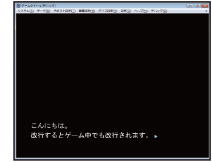
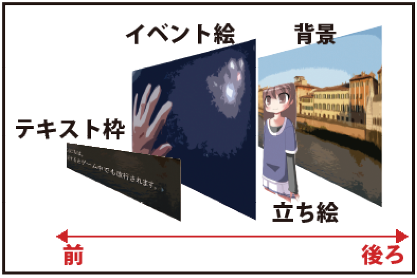
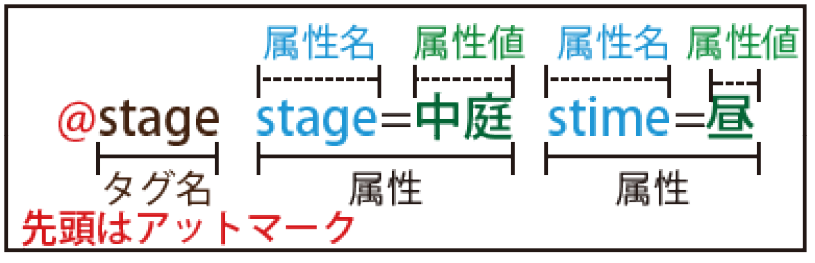
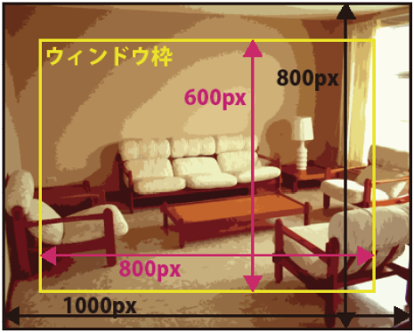
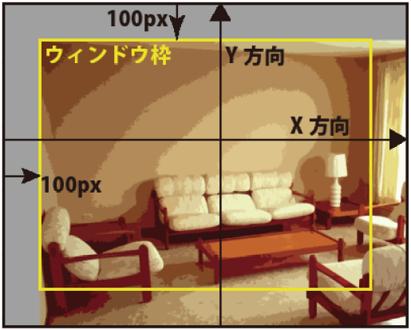
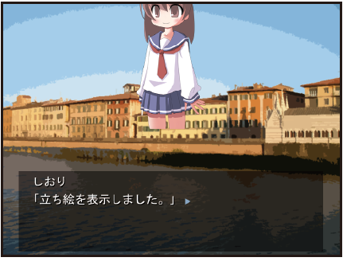
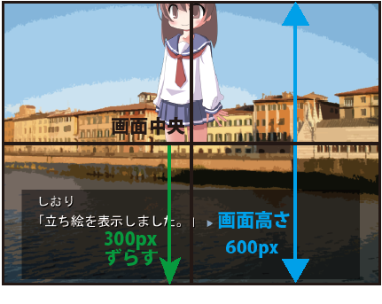
- Image Operation Scripts
In Chapter 3, I only explained how to show and hide images, but in this chapter, we'll introduce scripts to make the visuals a bit more elaborate.
- Transition basics
In Chapter 3, images appeared and disappeared instantly. In most digital novels, they fade in or out gradually. Let's try doing that. In Kirikiri, this function is called a "transition."
|
*start|Start @Town Day trans=crossfade time=2000 Fades in the background. @Shiori PoseA SchoolUniform Smile Front trans=crossfade time=1000 【Shiori】"Fades in the character sprite." @Shiori Hide trans=crossfade time=500 Fades out the character sprite. |
To perform a transition, use the "trans" attribute. If you specify "crossfade" for the trans attribute, you can perform a "crossfade transition," the most basic type of fade-in/out. Simply, it appears or disappears gradually.
Specify the time taken for the transition in milliseconds (ms) with the "time" attribute. "1 millisecond = 1/1000th of a second." Setting time=1000 means the transition takes 1000ms = 1 second. time=500 would be 500ms = 0.5 seconds.
When using the trans attribute, script execution pauses until the transition finishes. The text Fades in the background. will be displayed only after the background is fully shown. This kind of operation is called "synchronous operation."
In contrast to synchronous operation, there is the concept of "asynchronous operation." Asynchronous operation is when transitions or other tasks execute simultaneously with text display. Operations that are not asynchronous are synchronous. Let's try it for now.
|
*start|Start @Town Day trans=crossfade time=2000 nosync Asynchronously fading in the background. @Shiori PoseA SchoolUniform Smile Front trans=crossfade time=1000 nosync 【Shiori】"Asynchronously fades in the character sprite." @Shiori Hide trans=crossfade time=1000 sync Synchronously faded out the character sprite. ; Jumping to the start so you can try it multiple times @next target=*start |
Adding the "nosync" attribute (omitting the value) results in asynchronous operation, and the "sync" attribute results in synchronous operation. Do you notice how text is being displayed at the same time as the background or character sprite transition? It might be easier to understand if you slow down the "Text Speed" in the "Text Settings" menu.
The final @Shiori Hide trans=crossfade time=1000 sync is a synchronous operation just like before since it has the sync attribute. Transitions default to synchronous operation, so it doesn't change whether you include the "sync" attribute or not.
The actual mechanism for asynchronous operation is that when a transition starts with @Town Day trans=crossfade time=2000 nosync, script execution continues without waiting for the transition to finish. Thus, Asynchronously fading in the background. is executed immediately, and it pauses at the click wait on the empty line.
In synchronous operation, when a transition starts, script execution pauses until it finishes, and resumes once it is done. Thus, the transition and text display do not occur simultaneously.
In synchronous operation, clicking while waiting for the transition to finish will forcibly cancel the transition and resume script execution. In asynchronous operation, it will be forcibly canceled at the point of page advance if it is still transitioning. When a transition is "canceled", it instantly reaches the post-transition state. Fade-ins will display instantly, and fade-outs will disappear instantly.
|
*start|Start @Town Day trans=crossfade time=15000 nosync Fade in the background asynchronously over 15 seconds. If a page advance occurs during an asynchronous operation, the operation is canceled. @Shiori PoseA SchoolUniform Smile Front trans=crossfade time=15000 nosync nowait 【Shiori】"Asynchronously fades in over 15 seconds." With the nowait attribute, it won't be canceled even on page advance. @Shiori stoptrans Forcibly canceled the transition. |
Asynchronous transitions with the "nowait" attribute will not be canceled by page advance. That said, since it's problematic for it to run indefinitely, you can cancel an asynchronous transition that has the nowait attribute by using the "stoptrans" attribute. Note that only the image with the "stoptrans" attribute will be canceled. In @Shiori stoptrans, even if the background was in an asynchronous transition, it won't be canceled. If used as a tag instead of an attribute, like @stoptrans, all transitions can be canceled.
|
*start|Start @begintrans @Town Day @Shiori PoseA SchoolUniform Smile Front Right @endtrans trans=crossfade time=2000 Synchronously transitioned both the background and character sprite at once. @Kaede PoseA Casual Expressionless Front Left trans=crossfade time=1000 nosync @Shiori PoseB trans=crossfade time=1000 nosync Transition two character sprites simultaneously, asynchronously. @begintrans @Black @Kaede Hide @Shiori Hide @endtrans trans=crossfade time=1000 sync Cleared the background and character sprites via synchronous transition. |
To transition background and character sprites simultaneously, use the "begintrans" and "endtrans" tags. Write the changes you want to make via transition between @begintrans and @endtrans. Changes related to images written between them will not be reflected at the time they are written, but will be updated all at once with the transition specified in the endtrans tag. The begintrans tag has no attributes. You will specify the transition like @endtrans trans=crossfade time=2000.
If you want to transition two or more character sprites simultaneously without including the background, you can just list them as is without using begintrans and endtrans.
|
*start|Start @begintrans @Town Day @Shiori PoseA SchoolUniform Smile Front Right @endtrans trans=crossfade time=5000 sync Synchronously displayed background and character sprite. @begintrans @Shiori PoseB @Kaede PoseA Casual Expressionless Front Left @endtrans trans=crossfade time=2000 Synchronously transitioned two character sprites. @Shiori Casual Angry trans=crossfade time=1000 nosync @Kaede Smile trans=crossfade time=1000 nosync @wt Synchronously transitioned two character sprites. |
When transitioning multiple character sprites simultaneously without including the background, you can use begintrans and endtrans tags, or you can use the "wt" tag. @wt pauses script execution until all transitions, synchronous or asynchronous, finish. As seen at the end of the script above, you can make it behave like a synchronous transition by starting an asynchronous transition and waiting for it to finish immediately.
When transitioning the background and character sprites together, if you transition them separately, the display might look odd, so use begintrans and endtrans to transition them together.
In the wt tag, the "canskip" attribute can be used. Specifying true allows the transition to be canceled by clicking. The default behavior is canskip=true. If you specify false, you cannot cancel the transition by clicking, and script execution resumes only after the transition finishes. Since the "canskip" attribute cannot be used in synchronous operations via the sync attribute, they can always be canceled by clicking.
- Other transitions
In the trans attribute, you can specify various things besides crossfade. I will introduce them one by one.
Copy "rlSpiral.png" and "rlRightToLeft.png" from the sample assets "rule" folder into the "rule" folder of the project folder.
|
*start|Start @Town Day trans=universal time=3000 rule=rlSpiral vague=0 Synchronously transitioned background. @Town Night trans=universal time=3000 rule=rlSpiral vague=128 nosync Transition the background asynchronously. @begintrans @Sunflowers Day @Shiori PoseA Casual Angry Front Left @layer name=StarLayer file=Star show @endtrans trans=universal time=3000 rule=rlRightToLeft vague=64 【Shiori】"Transitions synchronously." |
Specifying "universal" in the trans attribute results in a "universal transition." Specify the transition time in the time attribute. In the "rule" attribute, specify the filename of a monochrome grayscale image. In a universal transition, pixels are swapped starting from the black parts of the image specified in the rule attribute (called a "rule image"), ending with the white parts. The "vague" attribute is an ambiguity value; specifying a larger value makes the boundary of the swap blurrier, resulting in a smoother transition.
Words don't explain it well, so I think it's best to try changing the numbers yourself. The vague attribute can be omitted, in which case it is assumed vague=64 is specified.
Rule images must be in the "rule" folder with a filename starting with "rl".
|
*start|Start @Sunflowers Day trans=scroll time=3000 from="top" stay="nostay" Synchronously transitioned background. @Sunflowers Evening trans=scroll time=3000 from="left" stay="stayback" nosync Transition the background asynchronously. @Discovery trans=scroll time=3000 from="bottom" stay="stayfore" 【Shiori】"Transitions synchronously." |
Specifying "scroll" in the trans attribute results in a "scroll transition." This is a transition where images scroll (slide) to switch. Specify the transition time in the time attribute. The "from" attribute specifies the direction from which the post-change image slides in. Specify one of "left", "top", "right", or "bottom" to slide in from the left, top, right, or bottom, respectively. In the "stay" attribute, specify one of "nostay", "stayback", or "stayfore". In "nostay", both the pre-change and post-change images slide. The pre-change image is pushed out by the post-change image. In "stayback", the pre-change image slides out, and the post-change image appears from beneath it. In "stayfore", the post-change image slides in and covers the pre-change image. Again, I recommend actually trying these yourself as they are hard to describe.
|
*start|Start @begintrans @Sunflowers Day @Shiori PoseA Casual Surprised Back Left @endtrans fade=2000 【Shiori】"Transitions the background and character sprite synchronously." @Shiori Hide fade=1000 nosync Transition the character sprite asynchronously. |
Since trans=crossfade is used frequently, you can also easily use the "fade" attribute. For the attribute value, specify the transition time that was previously in the time attribute for trans=crossfade.
- About synchronous/asynchronous transitions
Asynchronous operations that do other things simultaneously with text display are relatively heavy (slow) processes. Transitions themselves are heavy processes to begin with. On modern computers it's not a problem, but if used simultaneously and in large quantities, the display might stutter. In older games, synchronous transitions were used almost exclusively due to computer performance issues.
The good thing about asynchronous operations is that they don't keep the player waiting. In synchronous transitions, the player is made to wait for text to proceed while the image switches. You can skip it by clicking, but even that is tedious for some people. Occasionally, there are games where you can't skip even by clicking, but a game where you're forced to wait every time a character's expression changes is a garbage game. Regardless of content, it goes into the trash 30 seconds after starting. I really didn't want to introduce the canskip attribute of the wt tag, but I did so because restricting the range of expression is not good. Please don't use it. Not using transitions for switching might also be an option. It might be more effective to only use them in key scenes... but I'm not sure.
Currently, it seems common to use asynchronous transitions for character expression changes and synchronous transitions when the entire background changes. Asynchronous transitions also have the side effect that people might stop looking at character sprites, but there's a trend toward increasing types of expression variations. No, maybe it's settled down recently. I wonder who is even looking at them when you increase them so much. Would people who listen to the voice until the end also look at the character sprites? Voices are also increasingly being skipped with functions like voice cutting or multi-playback. Some games use face windows next to text, perhaps to show expressions.
- Opacity
|
*start|Start @LivingRoom Day @Shiori PoseB Casual Surprised Front Center Displays the background and character sprite. @Shiori opacity=128 【Shiori】"Reduces opacity to half." @Shiori opacity=0 【Shiori】"Sets opacity to 0." @Shiori opacity=255 【Shiori】"Restores opacity to 255." |
Using the "opacity" attribute, you can change a layer's opacity from 0 to 255. If opacity is low, the image becomes semi-transparent, and images on layers behind it become visible. If high, it becomes opaque, hiding images on rear layers. It defaults to the maximum value of 255, so the background behind character sprites is completely hidden. With @Shiori opacity=128, opacity becomes half, so the background behind becomes visible. With @Shiori opacity=0, it becomes completely transparent and the character sprite is no longer visible. Returning opacity to 255 with @Shiori opacity=255 makes the character sprite visible again. The opacity attribute can be used similarly for backgrounds, event CGs, and environment layers, as well as character sprites.
- Actions via the time attribute
Using actions allows you to change attribute values continuously. Simply specifying a value for an attribute changes it instantly, but using actions allows for expressions with movement.
|
*start|Start @LivingRoom Day @Shiori PoseA Casual Surprised Back Left Displays the background and character sprite. @Shiori xpos=200 time=1000 【Shiori】"Changes the xpos value over 1 second." @LivingRoom xpos=-50 ypos=300 time=2000 Changing background xpos and ypos values over 2 seconds. @Shiori opacity=0 time=3000 【Shiori】"Fades the character sprite to transparent over 3 seconds." |
If you specify a time in milliseconds with the time attribute while changing an attribute's value, the value will change from its current value to the specified value over the specified time. This is called an "action."
In @Shiori xpos=200 time=1000, the xpos attribute value changes from its current 0 to the specified 200 over one second. Since the value of the xpos attribute changes as "0, 1, 2, 3, ..., 199, 200", it looks like the character sprite is gradually moving to the right. If you specify xpos and ypos attributes simultaneously, like @LivingRoom xpos=-50 ypos=300 time=2000, both change over two seconds. Not just xpos and ypos attributes, but also the opacity attribute can be used similarly.
|
*start|Start @LivingRoom Day @layer name=StarLayer file=Star show Displays the background and environment layer. @StarLayer xpos=-200 time=1000 sync Moved environment layer with a synchronous action. @LivingRoom xpos=100 ypos=-100 time=2000 sync Moved background with a synchronous action. @StarLayer opacity=0 time=3000 nosync Making environment layer transparent with an asynchronous action. |
Unlike transitions, actions default to asynchronous operation. Only the default value is different; the mechanism of synchronous/asynchronous operation is the same as with transitions. In the case of synchronous operation, script execution is interrupted until the action finishes. You can specify this with the "sync" and "nosync" attributes. Asynchronous operations are canceled on page advance.
|
*start|Start @LivingRoom Day @layer name=StarLayer file=Star xpos=-200 ypos=-200 show Displays the background and environment layer. @StarLayer xpos=200 ypos=200 time=10000 nowait Moving environment layer with an asynchronous action. With the nowait attribute, it won't be canceled even if you click. @StarLayer stopaction Forcibly cancels the action. |
The "nowait" attribute can also be used just like with transitions. Transitions were canceled with the "stoptrans" attribute, but actions are canceled with the "stopaction" attribute. Using @stopaction as a tag can also cancel all actions.
|
*start|Start @Town Evening @Kaede PoseA Casual Expressionless Back Display the background and character sprite. @Town xpos=-200 time=2000 @Kaede Right time=2000 Moving background and character sprite with asynchronous actions. @Town xpos=200 time=10000 nosync @Kaede Left time=10000 nosync @wact Moved background and character sprite with synchronous actions. |
When using asynchronous actions on multiple images simultaneously, like a background and a character sprite, simply listing the tags is fine. There are no tags equivalent to begintrans and endtrans for transitions.
When using synchronous actions simultaneously, the "wact" tag can be used. While the wt tag waits for transitions to finish, the wact tag waits for actions. Execute asynchronous actions simultaneously and use @wact to wait for them to finish collectively. You can also use the canskip attribute to prevent them from being skipped.
|
*start|Start @Town Day fade=1000 nosync @Town xpos=-200 time=2000 nosync @wat Executed background transition and action simultaneously. |
While wt waits for transitions and wact for actions, the "wat" tag waits for both transitions and actions to finish. The canskip attribute can also be used similarly.
At the point they are called, the wt, wact, and wat tags pause script execution until all running transitions and actions finish. If canskip is omitted or canskip=false and a click occurs, all currently running transitions/actions are canceled.
If none are running at the time these tags are called, they are simply ignored without pausing.
|
*start|Start @Town Day fade=500 Display the background. @Town xpos=200 ypos=-200 opacity=0 time=2000 Making background transparent while moving it asynchronously. @Town xpos=0 ypos=0 time=2000 @Town opacity=255 time=4000 Making background opaque while moving asynchronously over different times. |
You can also use actions on xpos, ypos, and opacity attributes simultaneously. If written in a single tag like @Town xpos=200 ypos=-200 opacity=0 time=2000, the time specified in the time attribute will be common, but if you split it into two tags, you can specify different times. However, xpos and ypos are special and cannot be handled separately.
|
*start|Start @Town Day @layer name=Star1 file=Star show ypos=100 @layer name=Star2 file=Star show ypos=0 @layer name=Star3 file=Star show ypos=-100 Displayed background and environment layers. @Star1 xpos=300 time=2000 accel=accel @Star2 xpos=300 time=2000 accel=const @Star3 xpos=300 time=2000 accel=decel Moving Star 1 with acceleration, Star 2 at constant speed, and Star 3 with deceleration. @Star1 xpos=-300 time=4000 accel=acdec @Star2 xpos=-300 time=4000 accel=const @Star3 xpos=-300 time=4000 accel=accos Moving Star 1 with acceleration/deceleration, Star 2 at constant speed, and Star 3 with cosine acceleration/deceleration. |
Reviewing: ypos attributes are higher up as numerical values increase, so when executed, Star 1 will be displayed at the top, Star 2 in the middle, and Star 3 at the bottom.
Using the "accel" attribute allows you to make attribute values change with acceleration or deceleration. The overall time taken for the action won't change from the value specified in the time attribute. Specifying "accel" for the attribute value causes the value to change slowly at first and then rapidly later. Specifying "decel" causes it to change rapidly at first and then slowly later. Specifying "const" results in values changing at a constant rate, same as when not using the "accel" attribute.
"acdec" and "accos" are acceleration/deceleration, where the first half accelerates and the second half decelerates. They hardly differ when executed. "accos" has a slightly gentler speed change.
- Actions via the path attribute
|
*start|Start @Town Day @layer name=Star1 file=Star show Displays the background and environment layer. @Star1 path="(200,0,0),(200,200,255),(0,0,128)" time=4000 Moving. @Star1 path="(-200,0,255),(-200,200,255)" time=4000 spline Moving with a spline. |
Using the "path" attribute allows for multi-point movement and opacity actions. The attribute value is a series of sets in the format "(xposValue, yposValue, opacityValue)" connected by commas. In @Star1 path="(200,0,0),(200,200,255),(0,0,128)" time=4000, the three sets are "xpos=200, ypos=0, opacity=0", "xpos=200, ypos=200, opacity=255", and "xpos=0, ypos=0, opacity=128". It moves through these three points in the time specified in the time attribute. If you only want to change position without changing opacity, keep opacity values at a constant, like 255.
Using the "spline" attribute along with the path attribute moves through each point using spline-interpolated paths. This allows for smooth movement connecting each point. sync, nosync, and nowait attributes can also be used, but the "accel" attribute cannot.
- Image rotation
|
*start|Start @Town Day Display the background. @Town rotate=180 Rotates the background 180°. @Town rotate=0 Returned to original angle. |
Using the "rotate" attribute allows you to rotate an image. Specify how many degrees to rotate counter-clockwise as the attribute value. Specifying a negative value rotates clockwise. Not just backgrounds, but also character sprites, event CGs, and environment layers can be rotated similarly.
|
*start|Start @LivingRoom Day Display the background. @LivingRoom rotate=360 time=3000 Rotates the background one full turn counter-clockwise. @LivingRoom rotate=-360 time=6000 sync accel=acdec Rotates the background two turns clockwise. |
Actions using the time attribute can also be used. In rotate=360 time=3000, the value changes from the default 0 to the specified 360 through "0, 1, 2, 3... 359, 360" via an action, so visually it rotates once counter-clockwise. In the next rotate=-360 time=6000, the rotate value changes from its current 360 to the specified -360 through "360, 359, 358, ..., 1, 0, -1, ..., -359, -360". Visually, this results in two clockwise rotations. sync, nosync, and accel attributes also work without issue.
- Rotation origin
|
*start|Start @Town Day Display the background. @Town rotate=360 time=1000 Rotates the background once counter-clockwise. @Town afx=0 afy=0 Changed rotation origin to the top-left of the image. @Town rotate=720 time=1000 Rotates the background once counter-clockwise. |
The "afx" and "afy" attributes allow you to specify the "rotation origin." The rotation origin is the center point (coordinate) of rotation, and the display position of that point does not shift during rotation.
The rotation origin is a point on the image specified in a Cartesian coordinate system where the top-left of the image is (0,0) and the bottom-right of the image is (imageWidth, imageHeight). Look at the image on the right. The background image size is 800×600. The horizontal axis is X (afx) and the vertical axis is Y (afy), where afx is positive to the right and afy is positive downward. As mentioned, the top-left of the image is (0,0), and since this background image is 800×600, the × point at the bottom-right of the image is (800,600). The + point at the center of the image is (400,300).
The default rotation origin for a background is the center of the image. For an 800×600 image, it is (400,300). Thus, in the first @Town rotate=360 time=1000, rotation occurs centered around that middle point, as shown in the image on the right.
Next, the rotation origin is changed to (0,0) at the top-left of the image with @Town afx=0 afy=0. At this time, the display position shifts toward the bottom-right, but I'll explain that later. For now, in the next @Town rotate=720 time=1000, rotation occurs around the top-left of the image, as shown in the image on the right. Since it has already rotated to 360 degrees, 720 degrees is specified to complete another rotation.
|
*start|Start ; Shifting position upward to make rotation easier to see @Shiori SchoolUniform PoseB Sadness Back Center ypos=300 Display the character sprite. @Shiori rotate=180 time=2000 Rotates the character sprite 180° counter-clockwise. @Shiori afx=center afy=center Set rotation origin to center. @Shiori rotate=0 time=2000 Rotates the character sprite 180° clockwise. |
The default rotation origin for a character sprite is the bottom-center of the image, not the center. Thus, rotation is performed centered on the bottom of the image.
Also, in afx and afy attributes, you can use words to specify instead of numerical coordinates. Specifying "center" for the afx attribute matches the rotation origin's X-coordinate to the image's horizontal center X-coordinate. Specifying "center" for the afy attribute matches the rotation origin's Y-coordinate to the image's vertical center Y-coordinate. Thus, setting afx=center afy=center makes the image center the rotation origin. Furthermore, you can specify "left" or "right" for the afx attribute. Setting afx=left makes the left edge of the image the rotation origin, and afx=right makes the right edge the rotation origin. "top" or "bottom" can be specified for the afy attribute, making the top or bottom edge of the image the rotation origin, respectively. Following this, the default rotation origin for a character sprite is afx=center afy=bottom.
The default rotation origin for backgrounds, event CGs, and environment layers is the image center, namely afx=center afy=center. Character sprites differ to prevent their feet from shifting when they rotate. While not depicted in the samples, if you use a character sprite image where the full body is drawn down to the feet, the bottom-center of the image is exactly at the feet. Since character sprites should be standing on the ground, it's often convenient if the contact point at the feet doesn't shift.
- Display origin
|
*start|Start ; Shifting position upward to make rotation easier to see @Shiori SchoolUniform PoseB Sadness Back Center ypos=300 Display the character sprite. @Shiori rotate=180 time=2000 Rotates the character sprite 180° counter-clockwise. @Shiori afx=center afy=center Set rotation origin to center. @Shiori rotate=0 time=2000 Rotates the character sprite 180° clockwise. |
In addition to the rotation origin, there is a "display origin." While the rotation origin is an image-based coordinate for the center of rotation, the display origin is a window-based coordinate for the center of display. It is specified in a Cartesian coordinate system where the top-left of the window is (0,0) and the bottom-right of the window is (windowWidth, windowHeight).
Look at the image on the right. It's almost the same as the rotation origin, but note that it's a coordinate on the window, not on the image. Since the window size is also 800×600, the bottom-right of the window is (800,600), and the center of the window is (400,300).
Images are displayed centered on the display origin. That is, the rotation origin and display origin overlap when xpos=0 ypos=0.
Displaying a background with @Town Day results in it being displayed at a position where the rotation origin (image center) overlaps with the default display origin (window center). Setting xpos=100 shifts it 100px to the right from there, and ypos=100 shifts it 100px upward.
Changing the display origin to the top-left of the window with @Town orx=0 ory=0 shifts the image position so the rotation origin (image center) overlaps with the display origin (window top-left). Conversely, if the rotation origin is changed to @Town afx=left afy=top, the image position changes accordingly. Here, since the rotation origin (image top-left) overlaps with the display origin (window top-left), the result is the same as the initial display.
Just like the rotation origin, the display origin can be specified with the orx attribute as "left", "center", or "right" (horizontal window left edge, center, or right edge X-coordinate), and the ory attribute as "top", "center", or "bottom" (vertical window top edge, center, or bottom edge Y-coordinate).
Also, although the rotation origin is a coordinate on the window, it is set separately for each image. It doesn't mean there is only one for the entire window.
The rotation origin defaults to the window center for backgrounds, character sprites, event CGs, and environment layers.
When displaying the character sprite for the first time in Chapter 3, the position of the character sprite was shifted upward. This was because the bottom of the image was positioned at the screen center due to the rotation and display origin functions. Since that position was undesirable, a vertical offset (yoffset) could be specified specifically for character sprites, which essentially behaves as if the display origin's position shifted by the specified number of pixels.
- Scale ratio
|
*start|Start @Town Day Display the background. @Town zoomx=50 Reduced background width to 50%. @Town zoomy=200 Enlarged background height to 200%. @Town zoom=100 Returned background scale ratio to normal. |
You can specify the image's scale ratio in "zoomx" and "zoomy" attributes. These are horizontal and vertical scale ratios, respectively, where the default 100 represents the image's original size. Setting 50 results in half the normal size, 200 results in double, and so on. You can also use the "zoom" attribute to specify the same value for both zoomx and zoomy attributes at once.
|
*start|Start @Town Day @Shiori Front SchoolUniform PoseA Smile Display the background and character sprite. @Town zoom=50 time=2000 sync Shrinks the background to 50%. @Shiori zoom=200 time=2000 Enlarging character sprite to 200%. |
Actions via the time attribute can also be used for zoom, zoomx, and zoomy attributes. Just like with the rotate attribute, scaling is performed centered around the rotation origin. In other words, the display position of the rotation origin does not shift even when scaled up or down.
|
*start|Start @Town Day @Shiori Front SchoolUniform PoseB Expressionless Display the background and character sprite. @Town zoom=-100 time=2000 Enlarging background to -100%. @Shiori zoomx=-100 time=2000 Enlarging character sprite width to -100%. @Town zoom=-200 time=2000 Enlarging background to -200%. |
Specifying a negative value for zoom, zoomx, or zoomy attributes flips the image centered on the rotation origin. "zoomx" flips horizontally, "zoomy" flips vertically, and "zoom" flips both vertically and horizontally. Specifying -200 results in a flipped image that is also twice as large.
- Flipping
|
*start|Start @Town Evening @Shiori Back Casual PoseB Expressionless Display the background and character sprite. @Town flipy Flipped the background vertically. @Shiori flipx Flips the character sprite horizontally. @Town flipx Flips the background horizontally as well. @Town flipx=false flipy=false Returned background flip to normal. |
The "flipx" and "flipy" attributes can also be used to flip images. Set true to flip and false to return to normal. Remember that the attribute value "true" can be omitted. Flipping with flipx or flipy is performed such that the image's display position does not shift, regardless of the rotation origin. Since it's easy to use, it might be more convenient than "zoom" for flipping.
- Slant ratio
|
*start|Start @Town Day @Shiori Front SchoolUniform PoseB Expressionless Display the background and character sprite. @Town slantx=100 Slants the background 100° horizontally. @Shiori slantx=-100 @Shiori slantx=-100 Slants the character sprite -100° horizontally. @Town slantx=0 slanty=100 Slant the background 100 vertically. |
You can slant images by using the "slantx" and "slanty" attributes. The default for both is 0, which means no slanting at all.
When slanted, the rectangle is transformed into a parallelogram. A value of 100 results in a parallelogram with a 45-degree acute angle. It is difficult to explain well in words, so please look at the image on the right. The larger the value, the steeper the slant. Negative values slant in the opposite direction. Just like rotation and scaling, the slant is centered on the rotation origin, and the slant is applied so that its position does not shift.
|
*start|Start @Town Day The background displays. @Town slantx=100 time=2000 The background is slanting to 100 horizontally. @Town slantx=0 time=2000 sync Resets the background slant. @Town slanty=100 time=2000 The background is slanting to 100 vertically. |
Actions using the "time" attribute can also be used for slanting. There are no particular points of caution. "slantx" and "slanty" can also be used simultaneously in an action. In the script above, they are used one by one to avoid confusion.
- Blur
|
*start|Start @Town Day The background displays. @Town slantx=100 time=2000 The background is slanting to 100 horizontally. @Town slantx=0 time=2000 sync Resets the background slant. @Town slanty=100 time=2000 The background is slanting to 100 vertically. |
You can blur images by using the "blurx" and "blury" attributes. Both default to 0, which means no blur is applied. The "blurx" attribute is for horizontal blur, and the "blury" attribute is for vertical blur. Since the image itself is not being transformed, the rotation origin is irrelevant. You can also specify the same value for both blurx and blury using the "blur" attribute.
|
*start|Start @Shiori Front Casual_Clothes Pose_A Smile Displays the character sprite. @Shiori blurx=50 time=1000 Blurring the character sprite horizontally. @Shiori blurx=0 blury=50 time=1000 accel=accel Blurs the character sprite vertically. @Shiori blur=0 time=1000 sync Removes the blur. @Shiori allclear All cleared and ready. |
Actions using the "time" attribute can also be used for blurring.
If you use a large blur value, colors may remain around the edges even if you set the blur to 0. In the sample above, colors remain around the edges at the point the blur is removed. Not limited to blur, colors can also remain if abrupt actions are used for rotation, scaling, or movement. This happens when colors are drawn in a range wider than the original image size. When a large value is entered for blur, colors are painted outside the original size of the image, so those parts remain.
Possible workarounds are to not use values large enough to protrude off-screen or to increase the size of the image itself. You can increase the image size by adding transparent parts around the image.
Using the "allclear" attribute will forcibly clean up colors remaining outside the image size. If you can use "allclear" immediately, you may be able to make it less noticeable. In the script above, colors remain from the time the blur is removed until the player advances to the next text and "@Shiori allclear" is executed.
- Raster scroll
|
*start|Start @Town Day @Shiori Back Casual_Clothes Pose_A Smile Displays the background and character sprite. @Town raster=100 Raster scrolling the background. @Town raster=0 Stops. @Town raster=100 rasterlines=200 rastercycle=2000 Raster scrolling. @Town raster=200 Changed the scrolling width. @Town raster=200 rasterlines=400 Changed the vertical line width. @Town raster=200 rastercycle=10000 Changed the raster time. |
Horizontal raster scrolling is available via the "raster" attribute. The image will scroll in a wavy, horizontal fashion.
In the "raster" attribute, specify the maximum horizontal scroll amount in pixels. You can stop raster scrolling by setting raster=0.
The "rasterlines" attribute specifies the vertical width of the lines in pixels. The scroll direction (left or right) changes every specified number of pixels. The default value is 100. The "rastercycle" attribute specifies the time it takes to complete one full left-right scroll cycle in milliseconds. The default value is 1000.
When specifying "rasterlines" or "rastercycle," you must also specify "raster" at the same time. You need to use @Town raster=200 rasterlines=400 instead of @Town rasterlines=400.
|
*start|Start @Town Day @Shiori Back Casual_Clothes Pose_A Smile Displays the background and character sprite. @Town raster=100 time=2000 Raster scrolling the background. @Town raster=0 time=2000 Stopping. |
Actions with the "time" attribute can be used for the "raster" attribute. With @Town raster=100 time=2000, the "raster" attribute value changes like "0,1,2,...,99,100," so the scrolling width gradually increases. @Town raster=0 time=2000 does the opposite, stopping the raster scroll over 2 seconds.
Actions cannot be used for "rasterline" and "rastercycle" attributes. They change immediately to the specified value regardless of the "time" attribute.
Up until now, only backgrounds and portraits have been used in the sample scripts, but rotation, scaling, flipping, slanting, blurring, and raster scrolling can be used in the same way for backgrounds, portraits, event CGs, and environment layers.
- Relative specification
|
*start|Start @Town Day @Shiori Back Casual_Clothes Pose_A Smile Displays the background and character sprite. @Shiori xpos=@100 【Shiori】"I moved 100px to the right." @Shiori xpos=@100 【Shiori】"I moved 100px to the right again." @Shiori xpos=@-400 【Shiori】"I moved 400px to the left." |
Adding an @ (half-width at symbol) to the beginning of an attribute value makes it a relative specification from the current value. The actual value becomes the current value of the attribute plus the specified value.
Since xpos defaults to 0, in the first @Shiori xpos=@100, the value of xpos becomes 0+100=100. In the next @Shiori xpos=@100, the xpos value is already 100, so it becomes 100+100=200. In the final @Shiori xpos=@-400, it becomes 200+(-400)=-200.
Relative specification can be used for any attribute that supports actions via the "time" attribute. Summarizing the attributes that support "time" actions: "xpos", "ypos", "opacity", "rotate", "zoomx", "zoomy", "zoom", "slantx", "slanty", "blurx", "blury", "blur", and "raster."
- Percentage specification
|
*start|Start @Town Day @Shiori Back Casual_Clothes Pose_A Smile Displays the background and character sprite. @Shiori xpos=100% 【Shiori】"I moved to the 100% right position." @Shiori xpos=0% ypos=50% 【Shiori】"I moved to the 50% top position." @Shiori rotate=100% time=2000 【Shiori】"I am rotating one full turn counter-clockwise." @Shiori opacity=50% 【Shiori】"I set the opacity to half." |
Adding a % (half-width percent sign) to the end of an attribute value makes it a percentage specification. The attributes that can use percentage specification are the same as those that can use relative specification.
For the zoomx, zoomy, zoom, slantx, and slanty attributes, they are already specified by ratios, so adding a % or not doesn't change anything.
For xpos, ypos, blurx, blury, blur, and raster, which are specified in pixels: 0% is 0, and 100% corresponds to the screen width for x, and half the screen height for y. Since the default screen width is 800, @Shiori xpos=100% shifts it right by 400 (half of 800). For the next ypos=50%, it will shift up by 150, which is 50% of 300 (half the default screen height of 600). You can also shift left by using a minus sign, like xpos=-50%.
For the rotate attribute, 100% corresponds to 360 (one full rotation). For the opacity attribute, 100% corresponds to the maximum value of 255.
- Initial value specification
|
*start|Start @Town Day @Shiori Back Casual_Clothes Pose_A Smile Displays the background and character sprite. @Shiori xpos=-100:100 time=2000 【Shiori】"I am moving from xpos=100 to xpos=-100." @Shiori zoom=100:200 time=2000 【Shiori】"I'm scaling from 200% down to 100%." @Shiori pos=Center:RightOuter time=2000 ; @Shiori Center:RightOuter time=2000 is also OK 【Shiori】"I am moving from RightOuter to Center." |
In actions using the "time" attribute, the attribute changes from its current value to the specified value. By appending ":initial_value" to the attribute value, you can specify the starting value for the action.
With @Shiori xpos=-100:100 time=2000, the xpos attribute will change like "100, 99, 98, ..., -99, -100." The same goes for the next @Shiori zoom=100:200 time=2000, changing as "200, 199, 198, ..., 101, 100." For the portrait's pos=Center:RightOuter, you can omit the attribute name and use it like Center:RightOuter.
Attributes that can use initial value specification are all the same attributes that can use actions via the "time" attribute.
You can also combine relative, percentage, and initial value specifications. It can look like xpos=100:@-100 or xpos=@-40%:@20, but since it's rarely necessary, I won't explain it specifically.
- Rotation origin action
|
*start|Start @Town Day @Shiori Back Casual_Clothes Pose_A Smile Displays the background and character sprite. @Town afx=0 afy=0 time=2000 Changing the rotation origin of the background. @Town afx=center afy=center rotate=180 time=2000 Rotates with a changing rotation origin. |
Actions can also be used for the rotation origin. In @Town afx=0 afy=0 time=2000, the displayed position of the image changes as the rotation origin position changes. In @Town afx=0 afy=0 rotate=180 time=2000, the image is also rotated in addition to that.
Unlike other attributes that support actions, you cannot use relative, percentage, or initial value specifications for afx and afy attribute actions.
Using rotation origins allows for fairly complex movements, but in practice, complex movements are often handled by defining custom actions. I will introduce how to define actions later.
- Word registration
To fill some space, I'll go off on a tangent: IME word registration is quite useful. If you don't know what that is, please search for it.
Typing @Shiori seriously every single time is quite a chore. Now I have it set up so that "qs" converts to @Shiori and "qk" converts to @Kaede . "qs" and "qk" don't have any special meaning. I register strings I use often for each title.
For common ones, for example, "s" converts to a half-width space. Stop switching between full-width and half-width every time just to type spaces between attributes. This will come up in the voice explanation in Chapter 5, but "pdl" can convert to delayrun=label0. Even if you use it often, the attribute name is long and difficult.
You don't need to copy my method exactly, but this is one way to save labor, so please keep it in mind.
- Camera operation
KAGEX has the concept of a "camera." Think of the images displayed by "stage", "char", "event", and "layer" tags as being projected onto the screen through a virtual camera.
I will introduce the camera function for now, but since it's tedious to use, it's actually not used that often.
|
*start|Start @Town Day @Shiori Front Right Uniform Pose_A Smile Displays the background and character sprite. @env camerax=50 Shifted the camera position 50 to the right. @env cameray=50 Shifted the camera position 50 up. @env camerazoom=200 Set the camera zoom to 200%. @env camerarotate=45 Tilts the camera 45° counter-clockwise. |
Cameras are operated using the "env" tag. The "env" tag is used for general game operations besides the camera, which I will explain later.
Use the "camerax" and "cameray" attributes of the env tag to shift the camera position. Both default to 0. Moving the camera to the right shifts the entire projected screen to the left, and moving the camera up shifts the entire projected screen down. You can specify the camera's zoom scale using the "camerazoom" attribute. The default is 100; camerazoom=200 zooms the entire screen by 2x. You can rotate the camera using the "camerarotate" attribute. The meaning of the specified value is the same as the "rotate" attribute.
|
*start|Start @Town Day @Shiori Front Right Uniform Pose_A Smile Displays the background and character sprite. @env camerax=-150 time=2000 Shifting the camera position 150 to the left. @env cameray=150 time=2000 Shifting the camera position 150 up. @env camerazoom=200 time=2000 Setting the camera zoom to 200%. @env camerarotate=180 time=2000 Tilting the camera 180 degrees counter-clockwise. |
Actions with the "time" attribute can also be used. Using actions makes the camera movement easier to understand.
The camera can be used to simply move the entire screen, but if you specify the Z-position of the images, you can achieve 2.5D movement. By 2.5D, I mean images can be placed along a depth axis. In addition to the existing horizontal (X) and vertical (Y) axes, images have a depth axis (Z). The default is 100; larger numbers are closer to the foreground. Since it's not full 3D, the camera cannot orbit around objects, but 2D images can be moved somewhat like they are in 3D space.
|
// ■levelz // Specify the Z-position of portraits for each display level. levelz[0] = 100; levelz[1] = 100; levelz[2] = 100; // ■bglevelz // Specify the Z-position of the background. bglevelz = 100; |
The Z-positions for the background and portraits must be defined beforehand. Open "envinit.otjs" in the "init" folder and find parts like the ones above. Portrait Z-positions are specified per display level in the format "levelz[display level] = Z-position;". The background Z-position is specified in the format "bglevelz = Z-position;", shared by all backgrounds. The Z-position must be a number greater than 0. Please set it as follows here:
|
// ■levelz // Specify the Z-position of portraits for each display level. levelz[0] = 100; levelz[1] = 150; levelz[2] = 100; // ■bglevelz // Specify the Z-position of the background. bglevelz = 50; |
Display level 2 is not used in the sample script, so it remains at 100. Since the portrait at display level 1 is 1.5x larger than the image at level 0, its Z-position at level 1 is set 1.5x further forward than its level 0 position. In truth, the relationship between distance and size isn't that simple, but it's tedious, so we'll leave it at this.
The background is somewhat arbitrary, but it's set 2x further back than the level 1 portrait. When using a camera, you need to consider the distance from the camera when preparing the background. Depending on the situation, you might need to separate parts by distance. Using the camera properly is hard work. For backgrounds, since indie games often use free assets, eye levels might be inconsistent or portraits might look like they're floating, so it's also okay to not worry about the small details.
After modifying and saving envinit.otjs as above, run autosetting.bat in the tools folder to apply the changes.
The Z-position does not directly specify the distance from the camera, but rather the relative position between images. The default Z-position is 100, which serves as the reference. When the Z-position is 100, moving the camera left by 10 pixels moves the image right by 10 pixels. If the Z-position is 150, it moves right by 15 pixels, and if it's 50, it moves right by 5 pixels.
When you're in a car looking out, foreground scenery flows by faster than the background. This means foreground objects appear to move more than background objects. Moving the camera is the same as moving the viewpoint's (car's) position. Moving an image with xpos and ypos attributes is like the car being stopped and the person outside the car (the subject) walking and moving.
Position specifications using xpos and ypos attributes are also affected. The same xpos=100 will shift 100 pixels right when the Z-position is 100, but it will shift 150 pixels right when the Z-position is 150.
|
*start|Start @Town Day @Kaede Back Left Casual_Clothes Pose_A Expressionless @Shiori Front LeftCenter Uniform Pose_A Smile Displays the background and character sprites. @env camerax=-200 time=2000 Shifting the camera position 200 to the left. @env cameray=200 time=2000 Shifting the camera position 200 up. @env camerazoom=200 time=2000 Setting the camera zoom to 200%. @env camerarotate=180 time=2000 Tilting the camera 180 degrees counter-clockwise. |
If you run the script above, you should be able to see the effect of the Z-position.
As defined earlier, the Z-position of the background "Town" is 50, "Kaede" at display level 0 (Back) is 100, and "Shiori" at display level 1 (Front) is 150. Thus, when the camera shifts 150 left, "Town" shifts 100 pixels right, "Kaede" shifts 200 pixels right, and "Shiori" shifts 300 pixels right. Please try running it to see how it looks.
Zooming with the camerazoom attribute and rotating with the camerarotate attribute are not affected by the Z-position. Using the car example from before, using 5x binoculars inside the car makes everything look 5x larger regardless of distance. Tilting your head 45 degrees makes everything look tilted 45 degrees regardless of distance.
|
*start|Start @Town Day @Kaede Back Left Casual_Clothes Pose_A Expressionless @Shiori Front LeftCenter Uniform Pose_A Smile @layer name=Star1 file=Star levelz=80 xpos=-50 ypos=300 Displays the background, character sprites, and star. @env camerax=-200 time=2000 Shifting the camera position 200 to the left. @env cameray=200 time=2000 Shifting the camera position 200 up. |
The Z-position for environment layers can be specified with the "levelz" attribute. This is the same position specification based on the reference value of 100 defined in envinit.otjs.
|
*start|Start @Town Day @Kaede Back Left Casual_Clothes Pose_A Expressionless @Shiori Front LeftCenter Uniform Pose_A Smile @layer name=Star1 file=Star xpos=-270 ypos=250 zoom=80 nocamera Displays the background and character sprites. @env camerax=-200 cameray=200 time=2000 Shifting the camera position 200 to the top-left. @env camerazoom=200 camerarotate=180 time=2000 Setting the camera zoom to 200% and rotating 180 degrees. |
The "nocamera" attribute can be used in char, stage, and layer tags. Images with this attribute set to true will not be affected by camerax, cameray, camerarotate, and camerazoom attributes. In the script above, the position of "Star1" does not move at all. This can be used when displaying dates or parameter images on the screen.
Event CGs are completely unaffected by the camera from the start. Therefore, you cannot specify a Z-position using the levelz attribute or similar.
|
*start|Start @Town Day @Kaede Back Left Casual_Clothes Pose_A Expressionless @Shiori Front LeftCenter Uniform Pose_A Smile Displays the background and character sprites. @env shiftx=-100 time=1000 Shifting the camera 100 to the left. @env shifty=100 time=1000 Shifting the camera 100 up. |
The "shiftx" and "shifty" attributes are almost the same as camerax and cameray, but the whole thing moves by the specified number of pixels, regardless of the images' Z-positions.
With camerax=-100, the actual number of pixels shifted varies based on the image's Z-position, but with shiftx=-100, all images shift 100 pixels to the right. With shifty=100, all images shift 100 pixels down. Other points are the same as camerax and cameray attributes.
|
*start|Start @Town Day @Kaede Back Left Casual_Clothes Pose_A Expressionless @Shiori Front LeftCenter Uniform Pose_A Smile @layer name=Star1 file=Star xpos=-270 ypos=250 zoom=80 noshift Displays the background, character sprites, and star. @env shiftx=-100 time=1000 Shifting the camera 100 to the left. @env shifty=100 time=1000 Shifting the camera 100 up. |
Similar to the nocamera attribute, there is also the "noshift" attribute. If true is specified for this attribute, the image will not be affected by the shiftx and shifty attributes. In the script above, "Star1" does not move at all. Its usage is not much different from the nocamera attribute.
Event CGs are also unaffected by the shiftx and shifty attributes.
|
*start|Start @Town Day blur=30 @Kaede Back Left Casual_Clothes Pose_A Expressionless blur=15 @Shiori Front Center Uniform Pose_A Smile @layer name=Star1 file=Star xpos=-270 ypos=250 zoom=80 noshift blur=20 Displays the background, character sprites, and star. @Town blur=15 time=1000 @Kaede blur=0 time=1000 @Star1 blur=5 time=1000 @Shiori blur=-15 time=1000 Focusing on Kaede. @Town blur=10 time=1000 @Kaede blur=-5 time=1000 @Star1 blur=0 time=1000 @Shiori blur=-20 time=1000 Focusing on the star. |
KAGEX's camera only has the simple XY position correction via Z-position as introduced here. Despite the effort required to use it, its functionality might be a bit underwhelming. It lacks depth-of-field or out-of-focus expression features. Just blurring with the blur attribute like in the script above makes it look somewhat realistic.
- Screen shaking
|
*start|Start @Town Day @Shiori Front Right Uniform Pose_A Smile Displays the background and character sprite. @quake time=1000 vmax=20 hmax=10 Shakes the screen for 1 second. @quake time=2000 sync Shakes the screen for 2 seconds. |
The "quake" tag can be used to shake the entire screen. While you can also use actions to shake it, the quake tag is very convenient and easy to use. The "vmax" attribute specifies the maximum vertical shift and "hmax" specifies the maximum horizontal shift in pixels. The screen will shake randomly within the range specified by these attributes.
The vmax and hmax attributes default to 10 if omitted. The "time" attribute specifies how many milliseconds the screen should shake. By default, it operates asynchronously, but you can make it synchronous using the "sync" attribute.
|
*start|Start @Town Day @Shiori Front Right Uniform Pose_A Smile Displays the background and character sprite. @quake The screen shakes. The shaking from the quake tag is not cancelled by advancing the page. @stopquake Stops the screen shake. |
If the time attribute is omitted from the quake tag, the screen will continue to shake indefinitely. Also, unlike actions and transitions, the asynchronous operation of the quake tag is not cancelled by advancing the page. You must use the "stopquake" tag to stop the shaking.
|
*start|Start @Town Day @Shiori Front Right Uniform Pose_A Smile Displays the background and character sprite. @quake message The screen shakes. The screen shakes continuously. @stopquake Stops the screen shake. |
Using the "message" attribute, you can also shake the message area along with the screen. This is not recommended for use with text display as it makes it hard to read.
- Extended transitions
I have introduced three types of transitions: "crossfade," "universal," and "scroll." However, other transitions can be used by using Kirikiri plugins.
Kirikiri plugins are programs to extend Kirikiri's functionality, and they are the files with the .dll extension in the "plugin" folder within the development folder. Since the plugins located there are necessary for KAGEX to operate, they must be distributed along with the game itself when it is completed. To use a plugin, you "link" it to Kirikiri, but linking for these mandatory plugins is done automatically. Plugins containing extended transition features are not included there because they are not mandatory.
First, copy the plugin file. Copy "extrans.dll," found in the "extrans" folder inside the "plugin" folder of the SDK directory, into the "plugin" folder of your development directory.
|
// Linking additional plugins // Example: Plugins.link("saveStruct.dll"); |
Next, link it to Kirikiri. Open "plugins.tjs" in the "init" folder of the project directory; it is written as shown above. Linking a plugin is done in a format like "Plugins.link("plugin_name.dll");".
|
// Linking additional plugins // Example: Plugins.link("saveStruct.dll"); Plugins.link("extrans.dll"); |
Save after adding the line Plugins.link("extrans.dll");. Now "extrans.dll" will be linked when Kirikiri starts. Preparations are complete, so let's try using an extended plugin.
Since extended plugins are not directly related to KAGEX, I will only introduce them briefly. For details, please refer to the Transitions page (http://devdoc.kikyou.info/tvp/docs/kr2doc/contents/Transition.html#id295) in the Kirikiri Reference (http://devdoc.kikyou.info/tvp/docs/kr2doc/contents/). You will understand if you read "Extended Transition Plugins" while playing around with the attribute values.
|
*start|Start @Town Day Displayed the background. @Town Evening trans=wave time=10000 wavetype=2 maxh=50 maxomega=0.2 Performed a wave transition. @Town Night trans=mosaic time=2000 maxsize=20 A mosaic transition. @Sunflower Day trans=turn time=2000 A turn transition. @Sunflower Evening trans=rotatezoom time=2000 factor=0 accel=0 twist=3 twistaccel=0 A rotate-zoom transition. @Town Day trans=rotatevanish time=2000 accel=2 twist=-2 twistaccel=0 A rotate-vanish transition. @Town Evening trans=rotateswap time=2000 twist=2 A rotate-swap transition. @Town Night trans=ripple time=2000 rwidth=64 roundness=1.0 speed=6.0 maxdrift=20 A ripple transition. |
Specify the transition type in the "trans" attribute, the transition time in the "time" attribute, and the attributes specific to each type. Refer to the reference for details. Although not in the reference, sync and nosync attributes can also be used.
- Defining transitions
You can define frequently used transitions beforehand. Run "register_trans.exe" in the tools folder within the development folder, and select the project folder.
Click the "Add" button to define a new transition. Select the added "newtrans," input a name in the text box below the Add button, and press the Enter key to change the transition name. Here, we'll name it "RightScroll." You can also delete added transitions by clicking the "Delete" button.
Select a transition from the list on the left and set its attributes on the right. For "RightScroll," set "Transition Type" to "Scroll," "time" to "1000," "from" to "left," and "stay" to "nostay."
Once done, click "Output" in the menu. If you forget this, changes will not be reflected. Once this is finished, it can be used within scripts.
|
*start|Start @Town Day The background displays. @Sunflower trans=RightScroll Changed the background using RightScroll. @Town Evening trans=RightScroll time=3000 Overrides the time attribute and RightScrolls. @Town Night RightScroll stay=stayfore Overrides the stay attribute and RightScrolls. |
By specifying the defined transition name in the trans attribute, that transition can be used. By simultaneously specifying transition attributes, you can transition while changing part of the defined content. With @Town Evening trans=RightScroll time=3000, only the time attribute is changed, making the transition occur over 3 seconds instead of the defined 1 second.
You can also omit the "trans=" attribute name and use only the defined name, as in @Town Night RightScroll. You will basically be using it this way.
- Defining auto-transitions
You can define predefined transitions to be used automatically when changing images. Transitions that execute automatically are called "auto-transitions."
Before defining an auto-transition, define the transitions to be used.
Run the register_trans.exe you used earlier once more. Add two transitions, "BackgroundTransition" and "PortraitTransition." Set the transition type for both to "Crossfade." For the time attribute, set BackgroundTransition to 1000 and PortraitTransition to 500. Check the "nosync" box for PortraitTransition; it will be an asynchronous transition.
Don't forget to click the "Output" menu once you've finished the settings.
Next, define the auto-transitions.
|
// ■envTrans // Specify the auto-transition when any of stage, time, or event CG are changed. autoTrans["envTrans"] = ""; // ■stageTrans // Specify the auto-transition when stage or time are changed. // Takes precedence over envTrans. autoTrans["stageTrans"] = ""; // ■timeTrans // Specify the auto-transition when time is changed. // Takes precedence over envTrans and stageTrans. autoTrans["timeTrans"] = ""; // ■eventTrans // Specify the auto-transition when an event CG is changed. // Takes precedence over envTrans. autoTrans["eventTrans"] = ""; // ■charTrans // Specify the auto-transition when any of pose, dress, or face of a portrait are changed. autoTrans["charTrans"] = ""; // ■poseTrans // Specify the auto-transition when a portrait's pose is changed. // Takes precedence over charTrans. |
|
autoTrans["poseTrans"] = ""; // ■dressTrans // Specify the auto-transition when a portrait's clothing is changed. // Takes precedence over charTrans. autoTrans["dressTrans"] = ""; // ■faceTrance // Specify the auto-transition when a portrait's expression is changed. // Takes precedence over charTrans. autoTrans["faceTrans"] = ""; // ■positionTrans // Specify the auto-transition when any of a portrait's x/ypos, visibility, or display level are changed. autoTrans["positionTrans"] = ""; // ■charDispTrans // Specify the auto-transition when a portrait is shown or hidden. // Takes precedence over positionTrans. autoTrans["charDispTrans"] = ""; |
Open envinit.otjs in the init folder and find parts like those above. Define them in the format "autoTrans["Auto-Transition Type"] = "Transition Name";". Each auto-transition type, like "envTrans," has different timing for when it's used. Transitions specified in envTrans are used when any of stage, time, or event CG are changed. Read the explanations in the script above for other auto-transitions.
If multiple auto-transitions can be defined for the same change, the auto-transition with the narrower scope takes precedence. For example, for time changes, you can define "timeTrans," "stageTrans," and "envTrans." Since timeTrans applies only to time, stageTrans to time and stage, and envTrans to time, stage, and event CGs, they take precedence in this order. If timeTrans is specified, it's used; if not, stageTrans; if that isn't specified either, then envTrans will be used as the auto-transition for time changes. If envTrans is also not specified, no auto-transition occurs.
|
// ■envTrans // Specify the auto-transition when any of stage, time, or event CG are changed. autoTrans["envTrans"] = "BackgroundTransition"; // ■charTrans // Specify the auto-transition when any of pose, dress, or face of a portrait are changed. autoTrans["charTrans"] = "PortraitTransition"; // ■positionTrans // Specify the auto-transition when any of a portrait's x/ypos, visibility, or display level are changed. autoTrans["positionTrans"] = "PortraitTransition"; |
Since it's long, only the relevant parts are shown, but let's set the three above as a sample. Leave the others unchanged and unspecified. Once specified, run autosetting.bat.
|
*start|Start @Town Day ; BackgroundTransition will execute The background displays. @Shiori Front Center Uniform Pose_A Smile ; PortraitTransition will execute Shows the character sprite. @Shiori Casual_Clothes ; PortraitTransition will execute Changes the character sprite's clothing. @Shiori hide ; PortraitTransition will execute Clears the character sprite. @Town Evening ; BackgroundTransition will execute Changed the time. |
If you run the script on the previous page, backgrounds and portraits will be displayed with auto-transitions. For background or time changes, the BackgroundTransition specified in envTrans will be executed. For portrait showing/hiding or clothing changes, the PortraitTransition specified in positionTrans or charTrans will execute. It's quite convenient as you can omit transition specifications for each tag.
|
*start|Start @Town Day time=2000 The background displays. @Shiori Front Center Uniform Pose_A Smile sync Displays the character sprite. @Shiori Casual_Clothes time=2000 Changes the character sprite's clothing. @Shiori hide sync Clears the character sprite. @Town Evening nosync Changing the time. |
Similarly to specifying defined transitions with the trans attribute, you can change some attributes in tags where auto-transitions occur. With @Town Day time=2000, the time attribute of the auto-transition BackgroundTransition is changed, resulting in a 2-second asynchronous crossfade transition. With @Shiori hide sync, the sync attribute of PortraitTransition is changed, resulting in a 0.5-second synchronous crossfade transition.
|
*start|Start @Town Day trans=scroll from=top stay=nostay time=1000 The background displays. @Shiori Front Center Uniform Pose_A Smile notrans Displays the character sprite without any transition. |
If you specify the trans attribute as in @Town Day trans=scroll from=top stay=nostay time=1000, the auto-transition will not be used. The fade attribute, which is shorthand for trans=crossfade, is also OK. You can execute any individual transition regardless of auto-transitions.
Also, by using the "notrans" attribute as in @Shiori Front Center Uniform Pose_A Smile notrans, you can display it without any transition even if an auto-transition is set.
- Defining fade times
|
// ■fadeValue // Specify the default time for fades. fadeValue = 500; // ■charFadeValue // Specify the default time for portrait fades. charFadeValue = 500; |
These are each specified in milliseconds. "charFadeValue" specifies the default for portraits, and "fadeValue" for other images. If you want to change it from 500 milliseconds, rewrite it and run "autosetting.bat."
|
*start|Start @Town Day fade Displays the background with a fade. @Shiori Front Center Uniform Pose_A Smile fade Displays the character sprite with a fade. |
Omitting the fade attribute value results in a crossfade with the time specified earlier. In @Town Day fade, it uses fadeValue, and in @Shiori Front Center Uniform Pose_A Smile fade, it uses the time specified in charFadeValue.
- Backups
PC data is stored on hard drives, but hard drives are consumables. Be sure to take backups during game development. If data is lost and there is no backup, you'll have to start over from the very beginning.
Backup destinations include external hard drives, DVDs, USB sticks, and online storage. Use whatever you like. What's important here is to automate the backup. Only extremely diligent people can work hard to do manual backups every single day just in case. Data is lost when you get lazy and skip it for a while. You won't have to start from scratch, but you'll have to redo work from weeks ago. If you automate it, you'll be free from such sorrow.
Please research and figure out the actual method yourself. If you think "I'll do it later," it's over. You won't do it. You'll start doing it after it's lost. There is a saying, "The wise man learns from history, the fool from experience." I was a fool.
I've never used them myself, but recent external hard drives seem to come with software that backs up automatically. Online storage like Dropbox and SugarSync will automatically back up to the cloud just by saving files there.
- Data exchange
When collaborating with multiple people to make a game, a massive amount of files will be generated and things will get complicated. It might be different if you're meeting directly and making it in the same place, but exchanging files over email or Skype is crazy. I can't tell you how many times I sent the wrong one. You might think "I won't do that," but you will.
Since you can't send all the game data every time over email, let's say you only send files changed since the last time. It would be fine if you sent all changed data accurately and the receiver overwrote everything accurately, but that's impossible. If you make a mistake even once somewhere, things will gradually get weirder. It might be okay with just two people, but when three, four, five people gather, someone will make a mistake.
If you're making it with multiple people, at least implement something like Dropbox. You can keep everyone's data in the same state, take backups, and keep file change histories. It's easy and convenient, but I think the price is a bit high compared to the capacity. If 50GB is enough, $10 a month is a good deal.
- Version control
There are things called version control systems. Subversion, Git, Mercurial, Bazaar, etc. In digital novel production, the one actually used is likely Subversion. Version control means managing the records of file changes.
Especially when programming, there are times when you want to return a file to a previous state. This is easily done if you're using a version control system. Even when writing Kirikiri scripts, you might rewrite something and find it no longer works, but you don't know how to fix it. If you revert to the file before the changes, it's solved in one go.
Also, you can see how it would be a problem if two people were editing the same "01.ks" at the same time. This state is called a conflict, but it will notify you in such cases. With online storage like Dropbox, you might just save it without noticing.
In indie game production, it can also be used for keeping past versions. How will you keep slightly different versions like the Summer Comiket version, the SunCri version, and the Winter Comiket version? You can easily keep them with version control tags.
With Subversion, you can use a version control system relatively easily with TortoiseSVN. You need a server to place the repository, but if you're alone, it will work even if you put it on Dropbox. For team production, it's best to rent a server, but there seem to be Subversion hosting services too. In any case, if you're wondering what version control is, it's worth looking into.
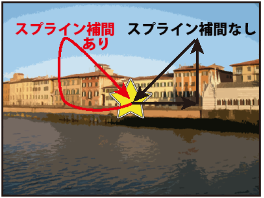
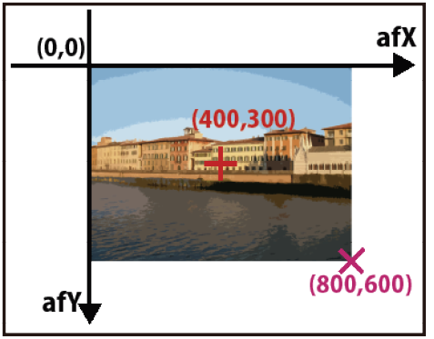
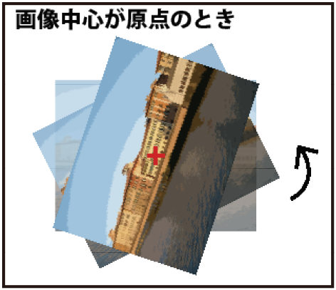
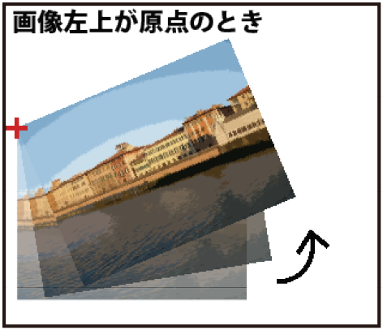
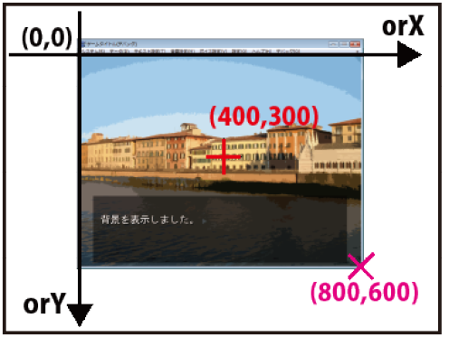
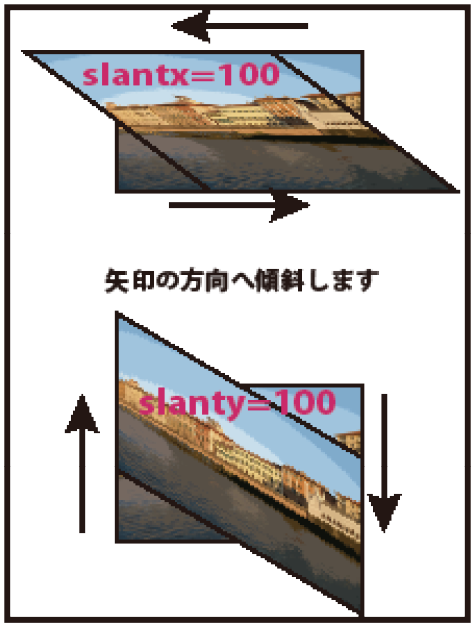
- Sound Operation Scripts
I will introduce not only simple sound playback but also other functions like fading and volume adjustment. Character voices are also handled in this chapter.
- Sync/async playback
|
*start|Start @seRain nosync Playing the sound effect asynchronously. @seRain stop Stops the sound effect. @seRain sync Played the sound effect synchronously. @bgmLakesideVillage loop=false sync Played the BGM synchronously. |
Just like transitions and actions, sound playback has sync and async options. In synchronous playback, script execution is paused until playback finishes. In asynchronous playback, it is not paused.
Async playback is the default, but you can play synchronously by adding the sync attribute when starting playback. However, if you're using the loop attribute for looping playback, it will never end, so it must always be asynchronous. For BGM, you can play synchronously if loop=false, but I don't think it's used very often.
Unlike async execution of transitions and actions, async playback without the nowait attribute will not be stopped by advancing the page. You must use the stop attribute to stop playback.
|
*start|Start @bgmLakesideVillage loop=false Playing BGM asynchronously. @bgm sync Waited for the BGM to end. |
The end of BGM playback with loop=false can also be awaited with @bgm sync.
- Fade in/out
|
*start|Start @bgmLakesideVillage time=2000 Fading in the BGM. @seRain loop time=2000 Fading in the sound effect. @bgm stop time=2000 Fading out the BGM. @seRain stop time=2000 Fading out the sound effect. |
If you specify a time in milliseconds with the time attribute when playing, it will fade in over that duration. You can also fade out by adding the time attribute when stopping with the stop attribute. This is common to both BGM and sound effects.
|
*start|Start @bgmLakesideVillage time=2000 sync Faded in the BGM synchronously. @bgm stop time=2000 sync Faded out the BGM synchronously. |
Regarding BGM fade-ins and fade-outs, you can make them operate synchronously by adding the "sync" attribute. In this case, the script execution will pause not until the BGM finishes playing, but until the fade itself finishes.
|
*start|Start @seRain time=2000 sync Plays the sound effect synchronously. @seRain loop The sound effect loops. @seRain stop time=2000 sync Fades out the sound effect synchronously. |
Regarding sound effects, if you add the sync attribute during the fade-in at the start of playback, it acts as a sync for the playback itself rather than just the fade. With @seRain time=2000 sync, the script will pause until the playback finishes, not just until the fade finishes. When stopping with the stop attribute, just like BGM, adding the sync attribute will pause script execution until the fade-out is complete.
- Volume specification
BGM volume is determined by "Master Volume" and "BGM Volume." Sound effect volume is determined by "Master Volume" and "SE Volume." Master Volume is exactly what it sounds like: a volume setting for the entire game that affects BGM, sound effects, voices, and movies. This can be set by the player from the "Master Volume" option in the "Volume Settings" in the top menu. "BGM Volume" and "SE Volume" allow for separate adjustments of BGM and sound effects, respectively. These can also be configured from the "Volume Settings" menu.
While these are values that the player can set, you can also adjust individual volumes within the script.
|
*start|Start @bgmLakesideVillage fade=80 Play BGM at 80% volume. @bgm fade=40 Set the BGM volume to 40%. @bgm stop @seRain loop Stop the BGM and play a sound effect. @seRain fade=50 Halve the sound effect volume. @seRain fade=100 Restore the sound effect volume. |
Individual volumes can be set for each playback using the "fade" attribute. Specifying 100 plays at the original volume, 50 at half volume, and 0 makes it silent. You cannot specify a number larger than 100. The volume can be changed whether it is at the start of playback or during playback.
The volume specified by the fade attribute is separate from "Master Volume," "BGM Volume," and "SE Volume." It specifies how much additional volume should be applied relative to those three settings established by the player. The actual volume at which BGM is played is the product of "Master Volume," "BGM Volume," and "Value specified by fade." If all three are at 100, the volume is 100 × 100 × 100 = 1,000,000. If all three are at 50, the volume is 50 × 50 × 50 = 125,000, which is 1/8th. Sound effects work exactly the same way, just using SE Volume instead of BGM Volume.
You don't need to worry about such complicated calculations in the script. Since "Master Volume," "BGM Volume," and "SE Volume" are values the player adjusts as they like, you only need to think about the value specified for the fade attribute. Setting fade=50 results in half the volume of the default fade=100. fade=10 is one-tenth.
|
*start|Start @bgmLakesideVillage Play BGM. @bgm fade=50 time=2000 Halve the BGM volume with a 2-second fade. @bgm stop @seRain loop Stop the BGM and play a sound effect. @seRain fade=50 time=2000 Halve the sound effect volume with a 2-second fade. @seRain fade=100 time=2000 Restore the sound effect volume with a 2-second fade. |
By using the "fade" attribute together with the "time" attribute, you can change the volume with a fade instead of changing it abruptly.
|
*start|Start @bgmLakesideVillage fade=50 time=2000 sync Play BGM at half volume with a 2-second synchronous fade. @bgm fade=100 time=2000 sync Restore the BGM volume with a 2-second synchronous fade. @bgm stop @seRain fade=50 time=2000 sync ;Since "sync" is used at the start of sound effect playback, it syncs until playback ends. Stop the BGM and play a sound effect with a 2-second synchronous fade. @seRain loop Play the sound effect loop. @seRain fade=50 time=2000 sync ;Since "sync" is used during sound effect playback, it syncs until the fade ends. Halved sound effect volume with a 2-second synchronous fade. |
Fades using fade and time attributes can also be made synchronous by adding the sync attribute. The behavior in this case is the same as fade-in and fade-out. Specifically, for BGM, adding the sync attribute will pause script execution until the volume fade finishes. For sound effects, adding the sync attribute at the start of playback results in synchronous behavior until playback ends. Adding the sync attribute during an ongoing fade results in synchronous behavior until that fade ends.
One thing to note is that the value of the fade attribute is reset to 100 if the fade attribute is omitted in the next playback start. In @seRain loop, you might think it would play at half volume because fade=50 was specified in the preceding @seRain fade=50 time=2000 sync. However, since the playback ended once, the fade volume resets to 100. If you want to play it at 50 here as well, you must specify the fade attribute again, such as @seRain loop fade=50. Because having a value specified a long time ago persist can cause bugs, it is designed to reset to 100 at each playback start. This applies to BGM as well.
- About Volume Settings
As a prerequisite, BGM and sound effects should have their volume balanced at the WAV file stage. The fade attribute is not a function meant to balance the volume levels between files. The default values for "Master Volume," "BGM Volume," and "SE Volume" (the values set when the game is first run) can also be configured in the development tools, so set those appropriately as well. Even if you balance the volume between files perfectly, if the overall game volume is too loud, the player will be startled by a blast of sound at startup. Conversely, if it's too quiet to hear, that's also a problem. Often, file volumes are adjusted so they sound right when "Master Volume," "BGM Volume," and "SE Volume" are all at 100. However, it's actually better to set all three initial values to "50" and adjust the WAV file volumes so they sound right at that level. This allows the player to make the volume either louder or quieter. If the initial setting is 100, they can only make it quieter, which can be inconvenient.
The proper place to use the fade attribute is when you need to change the volume dynamically within the game. "Dynamic" means that the behavior changes according to the situation. The antonym is "Static," which means the behavior does not change regardless of the situation.
Regarding games, elements that change based on player actions are dynamic elements. Things that don't change are static elements. Enemy characters in an action game are dynamic elements because they may or may not be defeated by the player. In-game terrain is a static element because it does not change. Nowadays, terrain can sometimes be destroyed, making it a dynamic element, but let's put that aside. The existence of dynamic elements is a characteristic of games compared to other media. Film is a completely static medium. Whether the audience is moved to tears or fast asleep, the content of the film does not change one bit.
Digital novels are sometimes called "static games" because they have fewer dynamic elements compared to other genres. Action games and the like are "dynamic games." However, dynamic elements do exist in digital novels. Typically, if something changes based on a choice, it is a dynamic element.
|
*start|Start @seRain loop Please select the volume. @seladd text=50% target=*50percent @seladd text=100% target=*100percent @select |
|
*50percent @seRain fade=50 Volume set to 50%. @next target=*start *100percent @seRain fade=100 Volume set to 100%. @next target=*start |
In the script above, the sound effect volume is changed based on the player's choice. In cases like this, it's more convenient to use the fade attribute than to prepare two separate files with different volumes. Even without direct choices, the volume might change based on a character's affection level or game progress.
The next example is a dynamic action based on a simple click by the player, rather than a choice.
|
*start|Start @bgmLakesideVillage Play BGM. Playback in progress. @bgm fade=50 Halve the volume. |
Clicking after Playback in progress. advances to the next step where the volume is changed, but the exact part of the song where the volume changes varies dynamically depending on the timing of the player's click. It might be 5 seconds after the start, or 10 seconds. Since you can't prepare audio files for every possible case, you use the fade attribute to change the volume.
The fade attribute is not something meant to be used like "@seRain always uses fade=50." You should adjust that at the WAV file stage. Use the fade attribute only when it needs to be changed during the game. The same applies to panning, which is covered next. If a sound always moves from right to left, you should just create a WAV file that does that.
- Panning
*start|Start
@seRain loop
The sound effect plays.
@seRain pan=100
Set to be heard from the right.
@seRain pan=-100
Set to be heard from the left.
@seRain pan=0
Returned to center.
Regarding sound effects, you can specify panning (the direction the sound comes from) using the "pan" attribute. A positive value places it to the right, and a negative value places it to the left. The default is 0, and you can specify values from -100 to 100. Panning is currently only available for sound effects and cannot be used for BGM. It might be made available in the future.
|
*start|Start @seRain loop The sound effect plays. @seRain pan=100 time=2000 Moving the sound to the right. @seRain pan=-100 time=2000 sync Moved the sound to the left. @seRain pan=0 time=2000 sync Returned to center. |
The time attribute can also be used. The perceived direction of the sound will move toward the specified direction over the specified amount of time. You can also use the sync attribute for synchronous operation. The precautions are the same as for the fade attribute. The sync attribute at the start of playback results in synchronous operation until playback ends. The pan attribute is reset to 0 (not 100) at the start of the next playback.
The "canskip" attribute can be used with the synchronous sound operations introduced so far. Specifying false makes it impossible to skip the synchronous operation by clicking. The default is true, so they can be skipped.
- Loop tuner
Kirikiri comes with a development tool called "Loop Tuner." I will briefly explain how to use it. In addition to looping from start to finish, you can make it loop mid-track or place markers called labels in the music file.
"krkrlt.exe" in the tools folder is the Loop Tuner. Please try launching it. Select the file you want to configure from "Open" in the "File" menu. As an example, open "bgmLakesideVillage.ogg," which should be in the "bgm" folder of your project folder.
The black left-pointing triangle button on the right side of the menu plays the current file. The black square button stops playback.
The yellow downward-pointing triangle button in the middle of the menu creates a new label. If you click it, a yellow triangle should appear above the waveform at the bottom. That is a label. You can make as many as you like. You can change the position of a created label by dragging the yellow triangle above the waveform. You can also change the name by double-clicking it.
To create a link, press the button to the left of the new label button. A red arrow will appear at the very bottom. That is a link. The audio will loop at the linked point.
Created labels and links can be saved via the "Save" option in the "File" menu. Saving creates a file named "bgmLakesideVillage.ogg.sli" in the same folder as the .ogg file; this is the Loop Tuner data.
For detailed instructions on using Loop Tuner, please refer to the Kirikiri Reference documentation (http://devdoc.kikyou.info/tvp/docs/kr2doc/contents/LoopTuner.html). I use it based on intuition and habit, so I can't explain everything.
If there is someone handling the sound, it's best to leave it to them. They will likely be able to master it.
For now, since we want to use it as a sample, please save "LakesideVillage.ogg" after creating one link and one label named "Label 0."
Sound professionals might use more advanced specialized tools and specify loop positions by "sample count." In this case, you would directly modify the configuration file. Open "bgmLakesideVillage.ogg.sli" in the same folder as the .ogg file using a text editor.
|
Link { From=2504685; To=1525930; Smooth=False; Condition=no; RefValue=0; CondVar=0; } |
The line is long and may wrap, but you should see a line like the one above. The number after "From=" is the sample count for the loop source, and the number after "To=" is the sample count for the loop destination. Here, change them to From=3112941; and To=1333418; and save. This will make it loop cleanly. You can verify if it's looping correctly by opening "bgmLakesideForest.ogg" in Loop Tuner again and playing it.
Files with the .sli extension where Loop Tuner settings are saved will be automatically loaded by Kirikiri during playback as long as they are placed in the same folder as the original music file.
|
*start|Start @bgmLakesideVillage Play BGM. |
Even though it's just playing BGM, you can see that it loops indefinitely at the link position set in Loop Tuner.
|
*start|Start @bgmLakesideVillage start=Label0 The sound effect plays. |
By specifying the name of a label set in Loop Tuner in the "start" attribute, you can start playback from that label's position. This start attribute can also be used for sound effects if they have labels set.
- Voice playback
It is no longer unusual for indie games to include voices. KAGEX comes with standard features for voice playback.
Please copy all files like "cvShiori_0001.ogg" from the "voice" folder in the sample materials into the "voice" folder of your project folder. Voice filenames follow the format "cv[CharacterName]_[4-digit Number]".
|
*start|Start @Shiori voice=1 【Shiori】"Hello." 【Shiori】"This is a voice playback test." If no name is attached, the voice won't play. 【Shiori】"The voice number automatically increases by one each time." |
To play a voice, use the "char" tag. The char tag is used for general character operations, not just for sprites. Here, I'm using the shorthand notation where the character name is used as the tag name.
When you specify a voice number in the "voice" attribute, the file with that number will be played the next time 【Shiori】 displays a name. In 【Shiori】"Hello.", "cvShiori_0001" will play. For the next name display, the voice number increments by one automatically. "cvShiori_0002" will play during 【Shiori】"This is a voice playback test." and "cvShiori_0003" will play during 【Shiori】"The voice number automatically increases by one each time." automatically.
|
*start|Start @Shiori voice=1 ; cvShiori_0001 will play 【Shiori】"Hello." @Kaede voice=1 |
|
; cvKaede_0001 will play 【Kaede】"Hello." ; cvShiori_0002 will play 【Shiori】"This is a voice playback test." ; cvKaede_0002 will play 【Kaede】"Voice numbers are managed per character." ; cvKaede_0003 will play 【Kaede】"They aren't affected by other characters' numbers." |
Voice numbers are managed separately for each character. They play exactly as described in the comments. This remains the same even with three or more characters.
|
*start|Start @Shiori voice=1 ; cvShiori_0001 will play. 【Shiori/???】"Hello." |
As discussed in the text display section, you can specify the actual displayed name after a forward slash. The name before the slash is used to determine which character's voice to play.
|
*start|Start @Shiori voice=1 ; cvShiori_0001 will play 【Shiori】"Hello." @Shiori voice=5 ; cvShiori_0005 will play 【Shiori】"You can change the number whenever you specify it." @Shiori voice=Voice1 ; Voice1 will play 【Shiori】"You can also specify it by filename." ; cvShiori_0006 will play 【Shiori】"Numbers aren't incremented on lines where a filename is specified." |
If your voice file numbers are not sequential, specify the number in the voice attribute each time. Also, if there are additions to the voices or if a filename is unusual, you can specify that filename directly to play it.
|
*start|Start @Shiori voice=1 ; cvShiori_0001 will play 【Shiori】"Hello." @Shiori voice=ignore 【Shiori】"No voice will play here." ; cvShiori_0002 will play 【Shiori】"This is a voice playback test." |
If you specify "ignore" in the voice attribute, no voice will play the next time that character's name is displayed. It will resume playing normally after that.
|
*start|Start @Shiori voice=1 ; cvShiori_0001 will play 【Shiori】"Hello." @Shiori voice=clear 【Shiori】"From now on, no voices will play for Shiori's lines." 【Shiori】"It won't play here either." 【Shiori】"No voice." @Shiori voice=2 ; cvShiori_0002 will play 【Shiori】"This is a voice playback test." |
Specifying "clear" in the voice attribute stops voices from playing for all subsequent name displays for that character. You can resume voice playback by specifying a number in the voice attribute again.
|
*start|Start @Shiori playvoice=2 nosync ; cvShiori_0002 will play |
|
Playback can occur regardless of name display. @Shiori playvoice=Voice1 ; Voice1 will play It can also be specified by filename. @Shiori playvoice=3 waitvoice ; cvShiori_0003 will play synchronously Voice played synchronously. |
The voice attribute specifies which voice to play at the next name display, but the "playvoice" attribute allows you to play a voice file immediately. As with the voice attribute, it is specified by number or filename. You cannot use the sync attribute for synchronous playback with the playvoice attribute. Instead, use the "waitvoice" attribute.
If you just want to play audio, you could technically use @se play=cvShiori_0002 like a sound effect, but please use the voice or playvoice attributes for anything intended to be a character voice. If played as a sound effect, SE Volume will be applied instead of Voice Volume.
Voice volume is determined by "Master Volume," "Global Voice Volume," and "Individual Voice Volume." Master Volume is shared with BGM and sound effects. "Global Voice Volume" can be set from the "Voice Settings" menu. "Individual Voice Volume" is a volume setting per character. By default, it is not shown in the menu, but if character names are configured in the tools, it can be displayed in the "Voice Settings" menu.
|
*start|Start @Shiori playvoice=Voice1 The voice plays. @Shiori stopvoice Forcibly stops the voice. |
Using the "stopvoice" attribute allows you to forcibly stop a character's voice. In the script above, if you click to skip The voice plays. before the voice ends, the voice will stop mid-way.
- Delayed execution
Stepping away from voices for a moment, I will explain "Delayed Execution" here because it is often used alongside voices. Delayed execution allows you to delay the timing of a tag's execution.
|
*start|Start @Shiori front middle uniform poseB expressionless Displays the character sprite. @Shiori left @Shiori smile delayrun=2000 The character's expression will change. |
The "delayrun" attribute can be used with "stage," "char," "event," "layer," "env," "bgm," and "se" tags. All tags are executed in order from top to bottom, but by specifying a time in milliseconds in the "delayrun" attribute, you can shift the timing when that effect occurs. With @Shiori left, the sprite moves left immediately, but with @Shiori smile delayrun=2000, the expression changes after 2 seconds. A tag with the delayrun attribute appears to be ignored at the place it is written and its effect does not appear until the specified time has elapsed.
|
*start|Start @layer name=Star1 file=Star show Displays the star. @Star1 xpos=300 time=3000 @Star1 opacity=0 time=1000 delayrun=2000 The star will start to disappear after 2 seconds. |
Delayed execution is not limited to expression changes. In the script above, the tag @Star1 opacity=0 time=1000 is executed 2 seconds later due to the delayrun attribute. As a result, the star becomes transparent over the course of 1 second, starting 2 seconds after the line was processed.
|
*start|Start @Shiori front middle uniform poseB expressionless Displays the character sprite. @Shiori left @Shiori right delayrun=10000 sync Moving the sprite to the right after 10 seconds. Delayed execution is cancelled by advancing the page. |
Asynchronous actions and transitions without the nowait attribute are cancelled by advancing the page, and delayed execution is the same. It immediately jumps to the state as if the delayed execution had finished. Since the nowait attribute cannot be used with delayed execution, it will always be cancelled. Furthermore, delayed execution cannot be made into a synchronous operation with the sync attribute; it is always asynchronous.
|
*start|Start @Shiori front middle uniform poseB expressionless Displays the character sprite. @Shiori voice=10 @Shiori poseA smile delayrun=Label0 【Shiori】"Tags can be executed in sync with the voice." |
By specifying a voice file label name in the delayrun attribute, you can execute tags in sync with its playback. If you open "cvShiori_0010.ogg" in Loop Tuner, you'll see a label named "Label0" inserted just before the word "Tags" in the sentence "Tags can be executed in sync with the voice." When the voice reaches that point in playback, @Shiori poseA smile will be executed. By placing multiple labels, you can have as many delayed executions as you like within a single line. If the page is advanced before the voice reaches the specified label position, the delayed execution is cancelled, just as when a time is specified.
- Scripts for Expressions, etc.
The most common use for delayed execution is probably changing expressions or executing actions in sync with the voice playback, as introduced last. It is convenient, but using delayed execution significantly increases the workload for scripting, so be prepared. If you run out of energy halfway through, you might end up with a game where the first half is very dynamic while the second half feels somewhat underwhelming.
Clicking "Loop Tuner" in the "Debug" menu opens the last played voice file in Loop Tuner. You can also open it with the "Shift+C" shortcut. Using this makes it easier to add labels to voice files. It is faster to advance the game to the scene where the voice is used and press Shift+C than to search for the desired file among a massive amount of voice files.
In actual scripting work, changing character sprite expressions often accounts for the bulk of the task. Usually, you prepare a script where text and voice numbers are already specified, and then you add voice labels and edit the script while running it. In this case, saving just before the part you are editing is convenient because you can check the behavior by simply loading instead of restarting the game. When loading, it reads the script at the load point, which you can use to load your edited script. Note that if label positions differ between the pre-edit and post-edit versions, things might break, requiring you to restart the game and save again.
Using the "Sprite Reference Window" from the "Debug" menu makes things a bit more convenient because you can work while viewing the combinations of sprite expressions. If you close the smaller "Sprite Change" window, you can reopen it from "Show Sub-window" in the "File" menu. You'll probably figure out how to use it as you play around with it.
As you open the game window, KAGEX log, Sprite Reference Window, Sprite Change Window, Loop Tuner, and text editor, the number of windows will keep growing. In addition to these, you might also have the console, image editing software, and Excel file name mapping tables open. Close Twitter and Skype while you're working. Well, if you want to do this properly, one monitor isn't enough. I recommend dual monitors. As of writing, I have two, but I plan to get three or more once I have the money. It's also a good idea to print out whatever can be printed and stick it next to your monitor.
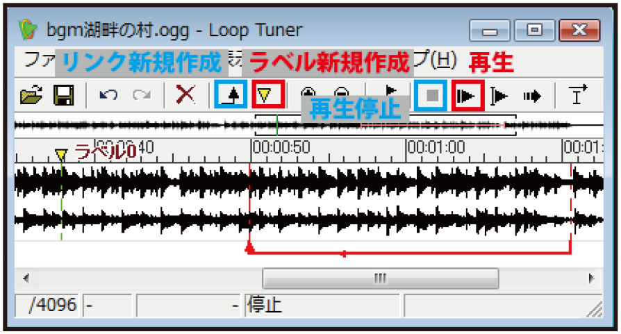
- Message Operation Scripts
This section introduces scripts related to text display, such as changing text positions or displaying images as text frames.
- Text display position
|
*start|Start @Town Day @Shiori front middle uniform poseB expressionless Displays background and character sprite. @position layer=message0 page=fore left=100 top=100 width=600 height=400 color=&RGB(0,0,0) opacity=127 ; This is wrapped because it's long, but please write it on one line. Changed the position of the message layer. |
The position and size of the message layer can be changed with the "position" tag. Use the "layer" and "page" attributes to specify which message layer's settings to change. For the layer attribute, specify the message layer number. You can use multiple message layers, but since we've been using number 0 so far, we use layer=message0. The number must always be preceded by "message." For the page attribute, specify "fore" for the foreground page and "back" for the background page. Message layers have "foreground" and "background" pages, which will be discussed later. For now, we'll use page=fore.
Specify the horizontal and vertical positions of the message layer in the "left" and "top" attributes, respectively. These are the number of pixels from the top-left corner of the window. In the "width" and "height" attributes, specify the size of the message layer in pixels.
The "color" attribute is used to specify the color of the message layer in the format color=&RGB(Red,Green,Blue). Specify the intensity of each color from 0 to 255. Here, color=&RGB(0,0,0) makes it pure black. The "opacity" attribute sets the opacity of the layer. Like the opacity attribute used for sprites, it ranges from 0 to 255. Here, opacity=127 makes it semi-transparent.
|
*start|Start @Town Day @Shiori front middle uniform poseB expressionless @position layer=message0 page=fore left=100 top=100 width=600 height=400 color=&RGB(0,0,0) opacity=128 marginl=100 margint=100 marginr=100 marginb=100 Changed the position of the message layer. |
The "marginl," "margint," "marginr," and "marginb" attributes specify the text display position within the message layer. By specifying the left, top, right, and bottom margins in pixels, you determine the position of the text. The text will be displayed inside those margins.
In the script above, the text will be displayed inside the red frame in the image on the right. There is space for one character on the right side of the text, which is an allowance for word-wrapping (kinsoku shori).
|
*start|Start @White @position layer=message0 page=fore left=100 top=100 width=600 height=400 color=&RGB(0,0,0) opacity=128 marginl=100 margint=100 marginr=100 marginb=100 nameleft=50 nametop=50 namewidth=200 nameheight=50 【Shiori】"Changed the position of the message layer." |
The "nameleft" and "nametop" attributes specify the horizontal and vertical positions of the name box, respectively. These are pixels from the top-left corner of the message layer. The "namewidth" and "nameheight" attributes specify the size of the name box in pixels.
It's small and hard to see, but the name will be displayed inside the red frame in the image on the right.
|
*start|Start @White @position layer=message0 page=fore left=100 top=100 width=600 height=400 color=&RGB(0,0,0) opacity=128 marginl=100 margint=100 marginr=100 marginb=100 nameleft=50 nametop=50 namewidth=200 nameheight=50 namealign=0 namevalign=1 【Shiori】"Changed the position of the message layer." |
The "namealign" and "namevalign" attributes specify where within the name box the name is displayed. namealign is the horizontal position: "-1" for left-aligned, "0" for centered, and "1" for right-aligned. namevalign is the vertical position: "-1" for top-aligned, "0" for centered, and "1" for bottom-aligned. In the script above, namealign=0 namevalign=-1 centers it horizontally and aligns it to the bottom vertically.
- About color specification
PC monitors use a method called "Additive Color Mixing" (RGB Color), which expresses all colors by combining red, green, and blue light. Red, Green, and Blue each have 256 levels from 0 to 255, allowing for a maximum of 256 × 256 × 256 = 16,777,216 colors. This is the "approximately 17 million colors" you often hear about.
The larger each number, the stronger that color's light. If (Red, Green, Blue) are (255, 0, 0), it's red; (0, 255, 0) is green; and (0, 0, 255) is blue. Setting all light intensities to the maximum with (255, 255, 255) results in white. For more details, look up additive color mixing.
For message layers, the color attribute isn't used much because it's more common to specify a text frame image instead.
- Text frame
While the color attribute of the position tag can only display a solid-colored rectangular message layer, using an image allows you to display any shape and color you like for the message layer.
Let's try displaying "message.png" from the sample uiimage folder. Copy it into the "uiimage" folder of your project folder.
|
*start|Start @Town Day @position layer=message0 page=fore frame=message opacity=255 left=0 top=400 marginl=60 margint=50 marginr=60 marginb=40 nameleft=60 nametop=0 namewidth=156 nameheight=37 namealign=0 namevalign=0 【Shiori】"Changed the message layer image." |
When using an image, specify the image filename in the "frame" attribute instead of the color attribute. Since message.png is already semi-transparent, the opacity attribute is set to 255 to make it opaque (fully utilizing the image's transparency).
While the layer's position is specified with the left and top attributes, specifying the size with width and height is not necessary. The message layer will automatically be the same size as the image specified in the frame attribute. Text positions and name box positions are specified in the same way as when not using an image. The script above specifies them as shown in the image on the right.
- Showing/Hiding the Message Layer
|
*start|Start @Town Day Displays the background. @msgoff @msgon Temporarily cleared the message layer. @msgoff fade=1000 @msgon trans=scroll time=1000 from=top stay=nostay Temporarily cleared the message layer. |
The "msgoff" tag can be used to hide the message layer. A hidden message layer can be shown again with the "msgon" tag.
You can also specify transitions in msgoff and msgon tags using the trans or fade attributes. These transitions are always synchronous, and the nosync attribute cannot be used. If the transition specification is omitted, like in @msgoff, it defaults to a crossfade transition using the time specified in fadeValue, as introduced in the automatic transitions section.
|
*start|Start @Town Day Displays the background. @msgoff Temporarily cleared the message layer. |
In the case of Temporarily cleared the message layer., the script is trying to display text while the message layer is hidden. In such cases, @msgon is automatically executed right before the text is displayed, causing the message layer to appear.
The message layer is hidden before the first line of text is displayed. Therefore, even before Displays the background., @msgon is automatically executed, causing the message layer to appear with a transition.
|
*start|Start @Town Day Displays the background. @position layer=message0 page=fore visible=false Temporarily cleared the message layer without a transition. |
@msgoff and @msgon automatically perform crossfade transitions. If you want to clear the message layer without a transition, use the "visible" attribute of the position tag. Specifying true shows it, while false hides it.
|
*start|Start @Town Day Displays the background. @Sunset trans=crossfade time=1000 msgoff Time changes. @Shiori front middle uniform poseB expressionless trans=crossfade time=500 msgoff 【Shiori】"Displays the character sprite." |
Although not mentioned in the transitions section, the "msgoff" attribute can be used along with transitions via the trans attribute. Setting this attribute to true causes the message layer to be automatically hidden immediately before the transition. @Sunset trans=crossfade time=1000 msgoff behaves the same as writing @msgoff and @Sunset trans=crossfade time=1000 on separate lines. @Shiori front middle uniform poseB expressionless trans=crossfade time=500 msgoff can similarly be written as two separate lines.
In actual scripting, rather than using the msgoff attribute directly each time, it is convenient to use it when defining automatic transitions to create an effect where the message layer is always hidden when changing backgrounds.
- Choices ="Basic-Paragraph">Since I only explained choices very briefly in Chapter 3, I will explain them in detail here.
|
*start|Start Please make a choice. @seladd text=Choice1 target=*Choice1 @seladd text=Choice2 target=*Choice2 @select *Choice1 Selects Choice 1. @s *Choice2 Selects Choice 2. |
To review Chapter 3, use the seladd tag to register choices and the select tag to display them.
While not directly related to choices, the "s" tag can stop script execution. If execution didn't stop when Choice 1 was selected, it would continue down to Selects Choice 2., so it is stopped with @s.
|
*start|Start @selopt left=0 top=0 width=800 height=300 @seladd text=Choice1 target=*Choice1 @seladd text=Choice2 target=*Choice2 @select |
To save lines, the jump destination scripts for *Choice1 and *Choice2 have been omitted. If you want to check the behavior, please add the parts from *Choice1 through Selects Choice 2. from before. Those parts are common for the rest of this explanation of choices.
The behavior of choices can be configured using the "selopt" tag. You can specify a "choice area" using the left, top, width, and height attributes. Specify horizontal and vertical positions with left and top, and width and height with the respective attributes.
The choice area is the range in which choices are displayed. Choices are arranged at equal intervals within that range. In the image on the right, the area is colored red to make it easy to understand, but in practice, it is transparent and invisible. The default choice area is the entire screen.
You can use images for choices. Please copy "choice_normal.png," "choice_over.png," and "choice_on.png" from the sample uiimage folder to your project's "uiimage" folder.
|
*start|Start @selopt normal=choice_normal over=choice_over on=choice_on @seladd text=Choice1 target=*Choice1 @seladd text=Choice2 target=*Choice2 @select |
Specify the filenames for the images used for choices in the "normal," "over," and "on" attributes of the selopt tag. These specify the images for the normal state, when the mouse is over the button, and when the button is clicked, respectively. The text specified in the text attribute of the seladd tag will be drawn and displayed on top of these images.
|
*start|Start @selopt fadetime=1000 @seladd text=Choice1 target=*Choice1 @seladd text=Choice2 target=*Choice2 @select |
The "fadetime" attribute of the selopt tag specifies the duration of the fade when displaying choices. The default is 0, meaning they appear immediately without a fade. This specifies the time for both the fade-in when showing choices and the fade-out when clearing them after selection.
|
*start|Start @selopt normal=choice_normal over=choice_over on=choice_on Configured the choice settings. @seladd text=Choice1 target=*Choice1 @select *Choice1 Selects Choice 1. @seladd text=Choice2 target=*Choice2 @select *Choice2 Selects Choice 2. |
Settings specified with the selopt tag persist until they are changed. If you specify them once at the beginning, they will be used for all subsequent choices. There is no need to use a @selopt tag for every @select. In the script above, the images from the first @selopt are used for both choices.
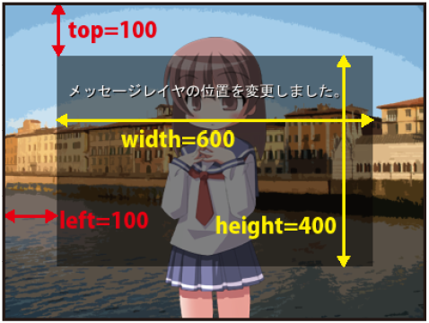
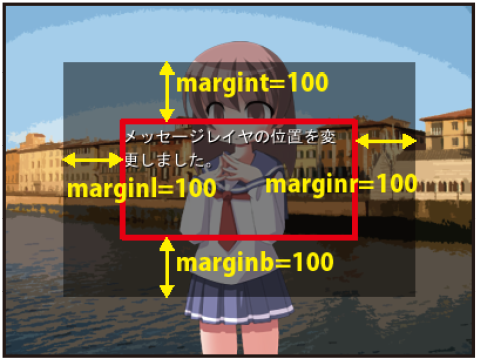
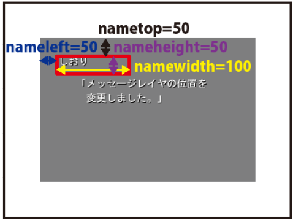
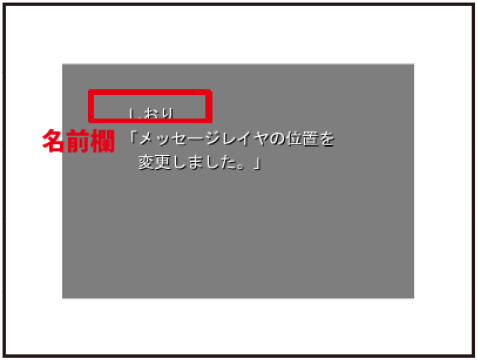
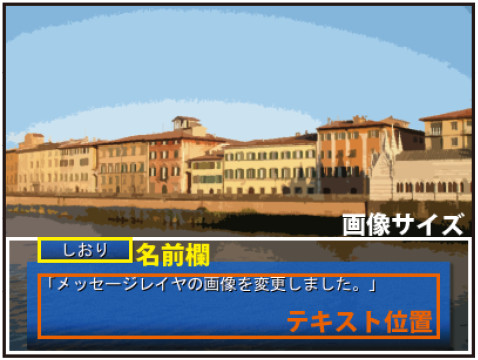
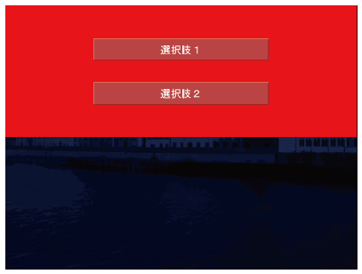
■Afterword
I'm wrapping this up on a somewhat abrupt note, having run out of time. It's currently past 10 PM on December 30th, the day before distribution.
I initially started writing this for beginners, but halfway through, it became a bit of a mess and started heading in an unfortunate direction. You might find some excuses regarding that on my blog or Twitter. I'd like to make my case here as well, but I'll restrain myself. I hope to release something more complete for the next Summer Comiket.
While I haven't prepared it yet, I will release the SDK used in this book after Winter Comiket. I'll manage it within a week at the latest. That will likely include a supplement in the form of a manual, so please check that out. As mentioned somewhere in the text, the support webpage for this book is http://biscrat.com/book/kagex/support/.
In the next chapter, I'm making a major shift in direction to pack in some information that might be useful for KAG users when using KAGEX. I'll write down everything I can think of that might be even slightly helpful. Since I'm starting from scratch now, it might get messy, so please bear with me.
- Appendix
- About Objects
Near the beginning of the main text, I used the stage, char, layer, and event tags directly, but please don't actually use them that way. You will almost certainly use shorthand notation instead. I tried to be thorough to explain the tags to beginners, but looking back now, that was a mistake.
I introduced those as "tags for displaying images" for the sake of simplicity. In reality, stage is for the stage object, char is for the character object, layer is for the environment layer object, and event is for operating event objects. Additionally, env is for environment objects, bgm is for BGM objects, and se is for sound effect objects.
KAGEX organizes concepts used in digital novels as "objects." In KAG, it was more low-level from a system perspective, where you handled layers directly using the image tag. You don't do that in KAGEX.
Characters are a particularly clear example; a character object that can be controlled with the char tag bundles together all the operations necessary for a character. Sprite display, voice playback, expression image display, and more can all be handled with a single char tag. Internally, it manages multiple layers and playback buffers, making it a much higher-level implementation compared to primitive KAG operations.
By the way, "low-level" and "high-level" are terms used in a programming sense. A low-level process means you can do a lot, but you have to do everything yourself, whereas a high-level process means its purpose is specialized but you can easily use convenient features.
- Supplements
Regarding character sprites, I only ended up covering sprites with pre-combined expressions. Once a project gets larger, expressions are usually separated. Since an explanation of that should be included with the development tools, please refer to those.
I wasn't able to explain action definitions in the main text, but upon looking into it properly this time, I found it much more complex than expected and skipped the explanation. I believe an explanation for this will also be included in the development tools.
- Scenario Scripts / System Scripts
The explanations in the main text are almost entirely about the scenario script part. When using KAGEX, it's easier to think about the "scenario script" for the main game and the "system script" for the title screen, save/load screens, and option screens separately. The system script was supposed to be covered in a later chapter, but it was cut.
Actually, the knowledge explained in the main text is enough for scenario scripts. Within a scenario, you mostly just display text, change a character's outfit or expression, and occasionally play sound effects or BGM. You can make a game knowing just that.
- Macros
I didn't explain macros in the main text, but the core parts of KAGEX already have everything necessary. I've made several games with KAGEX and hardly ever use macros.
If I do use macros, it's just for standard effects like a flash at the end of a scene.
It is convenient to turn @endtrans into a macro. While you can register automatic transitions for sprite or background switches, automatic transitions cannot be defined for @endtrans.
|
@macro name=et @endtrans BackgroundTransition * @endmacro |
Even something as simple as this works. Using @et instead of @endtrans allows you to use "BackgroundTransition" like an automatic transition.
Please define macros in "macro.ks" within the "sysinit" folder. As you can see if you take a quick look at "first.ks," it contains @call storage=macro.ks. Some beginners in KAG read macro definition scripts multiple times, but macro.ks is already prepared as a dedicated script file that is only read once immediately after startup.
- envinit.tjs
While scenario scripts are very simple, they require system scripts as a preceding step. This is a barrier when transitioning from KAG. Originally, you would define the contents of stage objects and character objects in a file called "envinit.tjs" using TJS dictionary arrays. Because this is complex, it might give the impression that KAGEX is difficult. In reality, it's not that bad, but the complete lack of references makes it a sticking point at first.
In this book, I wrote envinit.otjs instead of envinit.tjs. Writing that is similar to writing config.tjs and is much simpler than writing envinit.tjs directly. Even so, it's still tedious, so I plan to make it possible via tools. Please refer to the manual when the SDK is released.
As another simplification in this book, I have fixed the naming format for images like backgrounds and sprites. Originally, not having defined these naming rules added to the barrier for beginners. Things like this should be fixed. If you use the SDK, it's fine as long as you follow the rules written in the main text. I used autosetting.bat a few times in the main text; it searches for files and converts them into envinit.tjs.
- Choices ph">I introduced seladd, select, and selopt for choices. These are sufficient for games that use similar choices throughout. If you don't like them, button tags and link tags can be used in KAGEX just as they are in KAG. For button tags, you can specify the familiar image where the normal, mouse-over, and mouse-click states are lined up in the graphic attribute, but it's also convenient that you can load separate images for the normal, over, and on attributes, just like with choices.
- TJS-related Talk
- Variables
- System Scripts
- Release
- Menus, etc.
- Voices
- Movie playback
- Wait
- About [Tags]
- About Line Mode
- About Full-Screen Text Display
- Transitions
- Out of Time
In KAG, you probably used all sorts of tags like image, trans, and playbgm. In KAGEX, you can manage 90% of things with just seven tags: char, stage, event, layer, env, bgm, and se. Instead of having many tags, there are many types of attributes. These attributes that operate objects are sometimes called commands. The name doesn't really matter, but you can track command behavior by grepping the system folder for "commands."
In KAG, you could see how each tag behaved by looking at tagHandlers, but in KAGEX, attributes are grouped by object. For example, for character objects, the behavior of attributes used with the char tag is written under var charCommands = %[ in "KAGEnvCharacter.tjs." Knowing just this might make it easier if you want to read KAGEX's TJS.
Additionally, under var commands = %[ in "KAGEnvImage.tjs" are the behaviors for attributes common to objects that can handle images (stage, char, event, layer).
I didn't touch on this at all in the main text, but you can use game variables (f), system variables (sf), and temporary variables (tf) just as in KAG. Feel free to use conditional branching with the if tag if necessary. I haven't made many games requiring that kind of flag management lately, though. Most of the games I make are almost entirely linear or involve just a few choices.
In the SDK, the system part is also standardized for easy use. The game starts from "first.ks" after launch, and if you follow it a bit, you'll find @eval exp="biscrat_handler.callExtraConductor('title.ks')". Think of it like jumping to the beginning of title.ks using a call tag. In SDK system scripts, exp=biscrat_handler.~ is used frequently. It's similar to how those who used TJS features in KAG often used exp=kag.~.
Looking at title.ks, the flow is "Initialize state" → "Display title screen." Please leave the initialization part as it is. It initializes various things so that there are no problems when returning to the title screen after the game ending.
I just remembered—when returning to the title screen after the ending, please use @eval exp="biscrat_handler.funcObject.goToTitle()" to return. It causes problems if you jump directly to title.ks with a next tag or similar.
In the initialization of first.ks, please correct @position as you like. In the main text, I did it at the beginning of 01.ks to explain the position tag itself, but it's more convenient to set up the message layer along with the initialization in title.ks.
In KAGEX, you can place system buttons on the message layer. It's convenient to be able to skip or quick-save from the message layer, right? You can do that using the sysbutton tag.
|
@sysbutton normal=skip_normal over=skip_over on=skip_on x=100 y=40 exp=biscrat_handler.funcObject.switchSkip() nostable |
Just like buttons made with the button tag, system buttons are placed on the message layer. Specify the button images in the normal, over, and on attributes. Specify the position on the message layer with the x and y attributes. These are used as attributes without needing the locate tag. For the nostable attribute, specifying true allows the button to be clicked even while text is being displayed. Since you cannot specify a jump destination with storage and target attributes, you specify the TJS expression to be executed when clicked in the exp attribute. I have already prepared the TJS scripts to be written here.
The following functions are available: biscrat_handler.funcObject.switchSkip() to start skipping, biscrat_handler.funcObject.switchAutoMode() to start auto mode, biscrat_handler.funcObject.switchMessage() to hide the message layer, biscrat_handler.funcObject.switchHistory() to show the history, biscrat_handler.funcObject.goBackHistory() to trace back through past records, biscrat_handler.funcObject.exit() to exit, biscrat_handler.funcObject.quickSave() for quick save, biscrat_handler.funcObject.quickLoad() for quick load, biscrat_handler.funcObject.playCurrentVoice() to play the current voice, biscrat_handler.funcObject.goToSave() to go to the save screen, biscrat_handler.funcObject.goToLoad() to go to the load screen, biscrat_handler.funcObject.goToOption() to go to the options screen, and biscrat_handler.funcObject.goToTitle() to go to the title screen.
These alone should allow you to create typical system buttons. I likely won't have samples for these ready in time for the SDK release, but I will release them later for your reference. I recommend adding the sysbutton tags between @position and @syncmsg in title.ks.
The syncmsg tag copies only the message layer from the foreground page to the background page. If you have configured the message layer with position or other tags, it can sometimes cause bugs if the background page isn't updated as well, so I recommend writing @syncmsg as a set after configuring the message layer.
Write the actual title screen starting from the *TitleScreenDisplay label. It's intended that the title screen be displayed using position, button, and link tags, perhaps on message layer 1. This part is no different from KAG. In the initial state, it doesn't display the screen but jumps immediately to the *start label, and from there to 01.ks of the main game.
When jumping to the main game, please use the return tag instead of the next tag. The title screen is reached via something like a call tag. This is the same when creating save/load screens or options screens. You use return to go back from the call.
Regarding those save, load, and options screens, they are to be created in "system.ks" within the "syscn" folder. You display them using the *save, *load, and *option labels, respectively. Like the title screen, you will work hard to display them using button tags, slider tags, and so on. In KAGEX, I recommend writing system screens using TJS. Since sliders and the like are available from the start, it's better than KAG, but building system screens using tags is equally exhausting. I may release samples for these as well later.
My top recommendation is to just outsource it to me (lol). I handle things like system screen integration and KAGEX implementation support for around 10,000 yen for indie projects. Since the scenario script part is simple enough for anyone to do, it makes sense to leave the system part to someone else.
Releasing is no different from KAG. Just bundle everything together using the releaser and you're good to go.
The in-game menus have been expanded compared to default KAGEX. I plan to make it possible to toggle showing/hiding them with the tools, so please wait a bit longer.
I recommend numbering them properly in scenario order and having them play automatically for each line. If you're going to number them anyway when outputting the script... then maybe it's fine to number them properly with the voice attribute every time. I've only encountered a bug where voice numbers got out of sync once while using KAGEX. I don't know what happened, but I likely can't reproduce it, so I don't worry about it. Voice numbers will likely get out of sync when branching at choices and the like, so don't forget to specify them. When debugging voices, the double-speed playback in the menu is quite useful. Even if you can't hear everything clearly, you can tell if something is wrong even at high speed. Though if you have the time to listen to each one properly, that's fine too.
In KAG, there are so many tags that it's a pain, but in KAGEX, it's easy if you use the movie attribute of an environment layer. It would look like @layer name=Movie movie=movie.mpg. Use @wv to wait for playback.
|
@layer name=Movie movie=movie.mpg @wv @Movie delete |
That's it.
I hate making the player wait during a game, so I haven't used it in the text, but KAG's @wait can be used normally. Additionally, most synchronous tags support the wait attribute. By specifying a time in the attribute value, a wait of that duration is inserted after the synchronous operation finishes. With @Town Day fade=1000 sync wait=1000, there will be an additional 1-second wait after the fade ends. Adding the wait attribute automatically implies the sync attribute, so you can omit it. If you split it into @Town Day fade=1000 and @wait time=1000, it requires two clicks to skip, but combining them into one with the wait attribute allows skipping with a single click. Please combine them for the player's sake.
I haven't used any tags enclosed in [] in this book. Since KAGEX has automatic line breaks and automatic page breaks for newlines and blank lines, using [] can sometimes make things a bit complicated. Command lines starting with @ don't have that concern, so I've standardized on those.
In this book, newlines in the text are treated as actual newlines, and blank lines as page breaks. This behavior can be configured as "Line Mode," but for details, please see the manual included with the tools. You might need to change it depending on the work. There is also a line mode that makes the game wait for a click at every newline, but I do not recommend it at all. I want to minimize the amount of clicking required as much as possible.
KAGEX is not very well-suited for games that display text over the entire screen. Well, it's not impossible, but you might lose the name box functionality.
Please do not use KAG's trans tag. It just makes management a headache.
There are some KAGEX-related articles on the author's blog (http://kasekey.blog101.fc2.com/). Watching that might provide some useful references. I also accept questions via email (sakano@biscrat.com). You can also find me on Twitter (https://twitter.com/kasekey).
Kirikiri/KAGEX Course
~Digital Novel Production~
Date of Issue December 31, 2011 First Edition
Author sakano
Email sakano@biscrat.com
Tel 080-5095-02037
Twitter http://twitter.com/kasekey/
We look forward to your opinions and feedback.
Copyright (C) 2011 Biscrat.